⚡
⚡
Phó Thủ tướng: Dự kiến giảm giá điện 2%, đưa thuế tiêu thụ đặc biệt xăng về 0%
Phó Thủ tướng: Dự kiến giảm giá điện 2%, đưa thuế tiêu thụ đặc biệt xăng về 0% Theo Anh Văn | 31/10/2026 20:33 PM | Kinh tế vĩ mô Theo dõi Cafebiz.vn trên Chính phủ đang chỉ đạo EVN tiết giảm tối đa chi phí, hướng tới gi
🔥
🔥
Vụ trộm 6,3 tỷ USD từ sàn tiền điện tử Binance: Nghi vấn nhóm tin tặc TraderTraito
(Ảnh: NDTV) Theo Reuters , cái tên TraderTraito từng xuất hiện trong một báo cáo chung năm 2022 từ Cục Điều tra Liên bang Mỹ (FBI), Cơ quan An ninh Cơ sở hạ tầng và An ninh mạng (CISA) cùng Bộ Tài chính Mỹ. Báo cáo này m
🔥
⚡
⚡
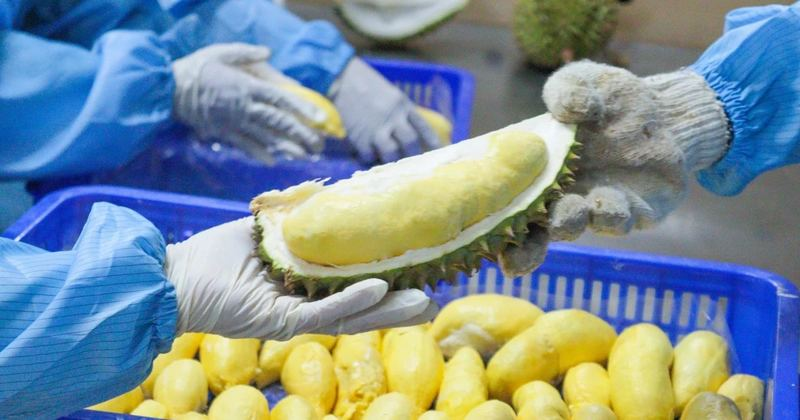
🔥
🔥
Phó thủ tướng Nguyễn Văn Thắng thông tin phương án giảm giá điện khoảng 2% từ nay đến 31-3-2027
Phó thủ tướng Nguyễn Văn Thắng - Ảnh: GIA HÂN Sáng 31-10, Phó thủ tướng Nguyễn Văn Thắng đã thay mặt Chính phủ giải trình, làm rõ thêm các nội dung được đại biểu Quốc hội nêu ra tại phiên thảo luận về kinh tế - xã hội. T
🔥
Bộ trưởng Ngô Văn Tuấn: Đã báo cáo Chính phủ đưa toàn bộ thuế xăng dầu về 0%
Nhấn mạnh quan điểm tăng trưởng phải gắn với lợi ích của người dân, Bộ trưởng Bộ Tài chính Ngô Văn Tuấn cho biết, bên cạnh mục tiêu tăng trưởng trên 10%, Chính phủ sẽ tập trung kiểm soát lạm phát khoảng 4,5%, tính toán p
🔥
🔥
Nhà máy lọc dầu 3 tỷ USD của Việt Nam lần đầu tiên lãi ngay 1 tỷ USD chỉ sau 9 tháng, doanh thu xăng E10 tăng 1.900 lần
BSR: Giá hiện tại Thay đổi Xem hồ sơ doanh nghiệp TIN MỚI Tổng công ty Lọc hóa dầu Việt Nam (HoSE: BSR) vừa công bố báo cáo tài chính hợp nhất quý III/2026 với doanh thu thuần đạt 59.581 tỷ đồng, tăng 69% so với cùng kỳ
⚡
Công nghiệp điện tử khẳng định vai trò mũi nhọn trong tăng trưởng xuất khẩu
Facebook Twitter Lưu bài viết Bản in Copy link Đóng góp khoảng 40% tổng kim ngạch xuất khẩu cả nước, ngành điện tử tiếp tục khẳng định vai trò trụ cột trong hoạt động thương mại và sản xuất công nghiệp. Trong bối cảnh th
🔥
Thống đốc Ngân hàng Nhà nước: Không thể có hai bảng cân đối, một để nộp thuế, một để vay vốn
Chi phí vay vốn còn cao, thiếu tài sản bảo đảm và khó tiếp cận tín dụng đang ảnh hưởng đến hoạt động sản xuất, kinh doanh. Nhưng để nâng cao khả năng tiếp cận vốn, Thống đốc Ngân hàng Nhà nước Phạm Đức Ấn nhấn mạnh yêu c
⚡
Nền tảng dịch thuật AI Doctranslate.io đoạt Ngôi sao vàng khởi nghiệp Tuổi Trẻ Startup Award 2026
Ngày 31.10, Báo điện tử Tuổi Trẻ và Hội Liên hiệp Thanh niên Việt Nam TP.HCM tổ chức vòng chung kết và lễ trao giải Tuổi Trẻ Startup Award 2026, phối hợp cùng Liên minh Đổi mới sáng tạo quốc tế InnoEx. Vinh danh giải phá
🔥
🔥
🔥
Phát triển kinh tế từ công nghiệp văn hóa: "Gỡ nút" đầu tư, mở đường sáng tạo
Facebook Twitter Lưu bài viết Bản in Copy link “Nhà nước không làm thay doanh nghiệp, nhưng phải tạo điều kiện thuận lợi để doanh nghiệp yên tâm đầu tư và các nhà sáng tạo phát huy được hết tài năng của mình.” Ý kiến của
🔥
🔥
Phó Thủ tướng: Có thể giảm giá điện khoảng 2% từ nay đến hết tháng 3/2027
Sáng 31/10, cuối phiên thảo luận về kinh tế - xã hội của Quốc hội, Phó Thủ tướng Nguyễn Văn Thắng làm rõ thêm 3 vấn đề lớn thuộc lĩnh vực kinh tế, tài chính và ngân sách mà các đại biểu quan tâm. Về mục tiêu tăng trưởng
🔥
⚡
⚡
Ăn mì tôm nuốt luôn lưỡi lam: Coi chừng họa khi miệng nhai, tay lướt, mắt dán điện thoại
Trên đường Nguyễn Gia Trí, phường Thạnh Mỹ Tây, dù ăn cùng nhau nhưng mỗi người vẫn ‘nhốt’ mình vào chiếc điện thoại của riêng họ - Ảnh: CAM LY Thông tin về trường hợp một người đàn ông 45 tuổi nuốt phải lưỡi dao lam khi
⚡
⚡
🔥
Tháo gỡ khó khăn cho doanh nghiệp, đẩy mạnh phòng chống thiên tai ở ĐBSCL
Phó Chủ tịch Quốc hội Nguyễn Thị Hồng điều hành phiên họp Quốc hội, sáng 31-10. Ảnh: QUANG PHÚC Đồng hành hỗ trợ doanh nghiệp Bàn về động lực tăng trưởng kinh tế, đại biểu (ĐB) Trịnh Xuân An (Đồng Nai) đề nghị Chính phủ
🔥
⚡
⚡
Cập nhật BCTC quý 3/2026 ngày 31/10: BSR, SHB, Eximbank, Vietnam Airlines cùng nhiều doanh nghiệp lớn công bố, kết quả bất ngờ
Cập nhật BCTC quý 3/2026 ngày 31/10: BSR, SHB, Eximbank, Vietnam Airlines cùng nhiều doanh nghiệp lớn công bố, kết quả bất ngờ Theo Ngọc Điệp | 31/10/2026 18:53 PM | Kinh doanh Theo dõi Cafebiz.vn trên BSR và EVN Genco3
🔥
🔥
Trà Thái Nguyên lên sàn Tiktok Nhật Bản, dự triển lãm lớn nhất Trung Quốc
Khẳng định vị thế trà Việt Nam Trà Thái Nguyên đón nhận những tin vui đầu tiên ngay sau khi Festival Trà quốc tế - Thái Nguyên 2026 khai mạc tối 30.10. Chia sẻ tại Diễn đàn kinh tế trà quốc tế năm 2026, do UBND tỉnh Thái
🔥
⚡
Cho rằng Google AI là lý do chính khiến nền tảng "bay màu” 7 tỷ USD trong 2 ngày: Reddit dựng tường lửa bắt người dùng phải đăng nhập
Cho rằng Google AI là lý do chính khiến nền tảng "bay màu” 7 tỷ USD trong 2 ngày: Reddit dựng tường lửa bắt người dùng phải đăng nhập Thiên Minh | 31/10/2026 20:02 PM | Công nghệ Theo dõi Cafebiz.vn trên Trước sự càn qué
🔥
Giải ngân 100% vốn đầu tư công sẽ đóng góp khoảng 1,7% tăng trưởng kinh tế năm 2026
Theo Phó Thủ tướng Nguyễn Văn Thắng, mục tiêu tăng trưởng GDP 10% trong năm 2026 là thách thức rất lớn nhưng không phải nhiệm vụ bất khả thi, khi nền kinh tế còn nhiều động lực và dư địa tăng tốc. Chính phủ đang tập trun
🔥
Thống đốc nói về lãi suất, tín dụng bất động sản và vốn cho doanh nghiệp
Thống đốc Ngân hàng Nhà nước Phạm Đức Ấn phát biểu tại Quốc hội - Ảnh: chinhphu.vn/Nhật Bắc Điều hành lãi suất cần tìm điểm cân bằng Tại phiên thảo luận ở Hội trường Quốc hội ngày 31/10, Thống đốc NHNN Phạm Đức Ấn đã tra
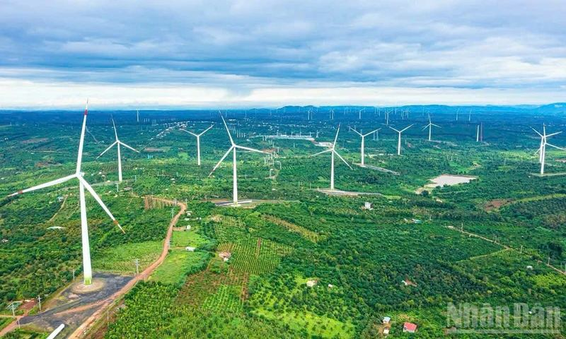
🔥Đắk Lắk chấp thuận đầu tư Nhà máy điện gió Ea Sin tổng vốn đầu tư 2.893 tỷ đồng
Theo quyết định, dự án do Công ty cổ phần Đầu tư Xây dựng Trung Nam và Công ty cổ phần Năng lượng tái tạo Trung Nam làm nhà đầu tư, triển khai tại xã Cư Pơng và xã Ea Khăl, tỉnh Đắk Lắk. Dự án được kỳ vọng góp phần bổ su
🔥
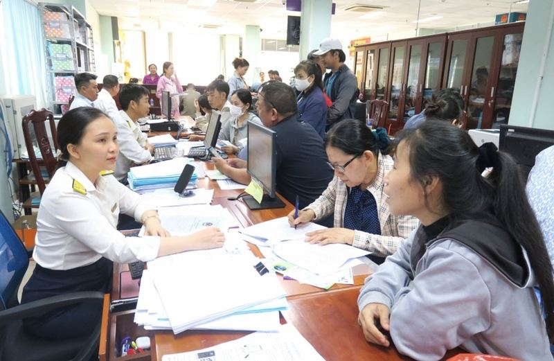
🔥
🔥
🔥
 ⚡
⚡
 ⚡
⚡
Nga chính thức gia hạn lệnh cấm xuất khẩu dầu diesel đến hết tháng 1/2027
Facebook Twitter Lưu bài viết Bản in Copy link Theo hãng tin RIA Novosti, Chính phủ Nga đã gia hạn lệnh cấm xuất khẩu một số loại nhiên liệu, trong đó có dầu diesel, đối với các doanh nghiệp sản xuất trực tiếp cho đến hế
⚡
⚡
Bốn nhà thầu đưa giá thấp 'bị lơ', chọn KISC với giá 160 triệu USD, gây thiệt hại 532 tỉ
Cựu Chủ tịch VNS Mai Văn Tinh bị truy tố - Ảnh: T.L. Những sai phạm tại gói thầu này gây thiệt hại hơn 532 tỉ đồng, trong đó thiệt hại tài sản nhà nước 241 tỉ. Giữa tháng 7-2009, trong cuộc đàm phán gói thầu xây dựng Nhà
🔥
🔥
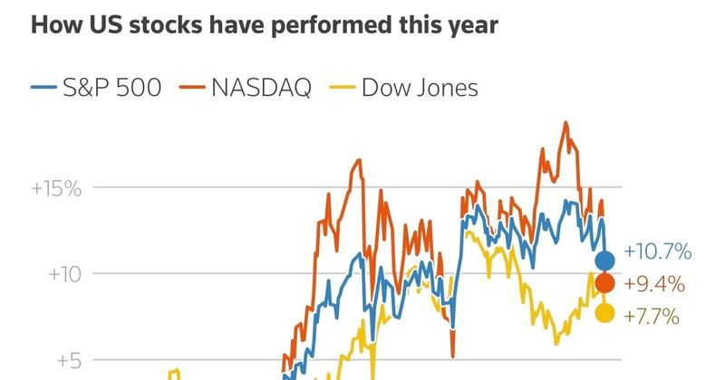
🔥
🔥
🔥
🔥
🔥
⚡
⚡
Tổng thống Zelensky: Tên lửa Patriot có thể bảo vệ Ukraine, nhưng việc giao hàng sẽ mất nhiều năm
Tổng thống Ukraine Volodymyr Zelensky cho biết việc Mỹ phê duyệt khả năng bán 500 tên lửa đánh chặn PAC-3 dành cho hệ thống phòng không Patriot là bước tiến quan trọng, song cảnh báo quá trình bàn giao có thể mất nhiều n
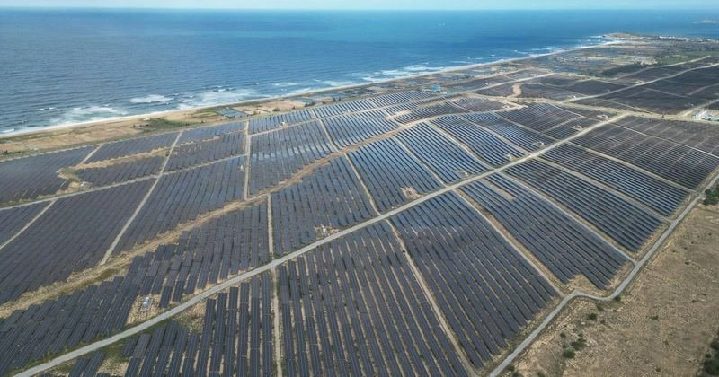
⚡
⚡
Khu nghỉ dưỡng 750 tỷ đồng bỏ hoang nhiều năm bên vịnh Lăng Cô có chủ mới
TIN MỚI Ngày 31/10, thông tin từ Ban Quản lý Khu kinh tế, công nghiệp TP. Huế cho biết, dự án Khu nghỉ dưỡng Huyền thoại Địa Trung Hải tại xã Chân Mây - Lăng Cô đã có nhà đầu tư trúng đấu giá tài sản sau 5 lần tổ chức đấ
⚡
🔥
🔥
Thị trường đã đạt 2.900 tỷ đồng, robot sẽ 'xâm chiếm' những ngành nào tại Việt Nam?
Thị trường đã đạt 2.900 tỷ đồng, robot sẽ 'xâm chiếm' những ngành nào tại Việt Nam? Quảng Định | 31/10/2026 17:03 PM | Kinh doanh Theo dõi Cafebiz.vn trên Quy mô thị trường robot công nghiệp Việt Nam đạt xấp xỉ 112 triệu
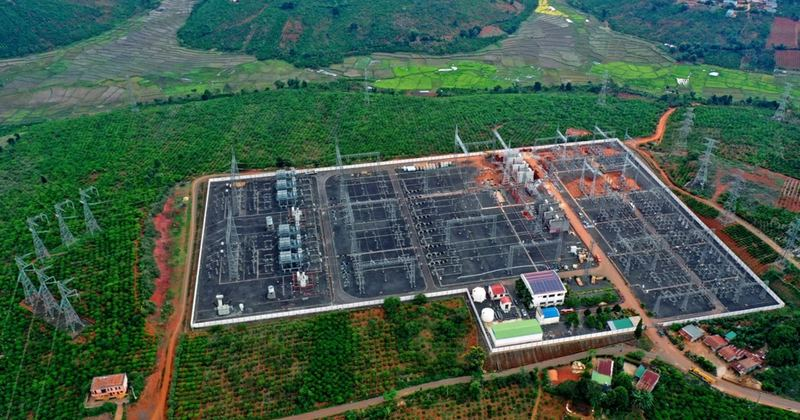
🔥Đóng điện thành công máy biến áp AT1 900MVA Trạm biến áp 500kV Di Linh, tỉnh Lâm Đồng
Dự án Nâng công suất Trạm biến áp 500kV Di Linh do Tổng công ty Truyền tải điện Quốc gia (EVNNPT) làm chủ đầu tư, PTC3 quản lý dự án. Dự án được triển khai trong khuôn viên của Trạm biến áp 500kV Di Linh hiện hữu (tỉnh L
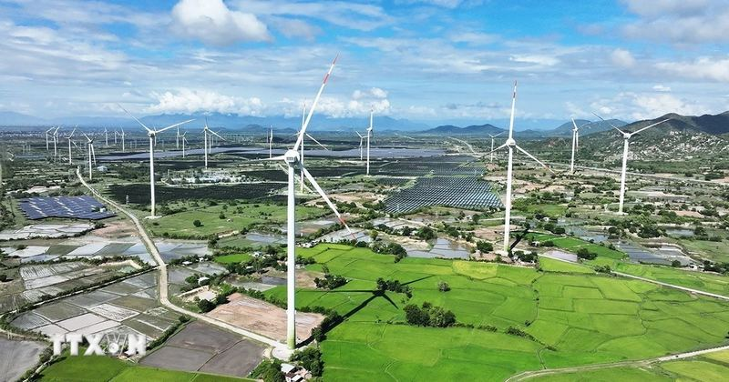
🔥Hoàn thiện hệ thống chỉ tiêu để triển khai các chính sách phát triển kinh tế-xã hội
Facebook Twitter Lưu bài viết Bản in Copy link Sáng 31/10, tiếp tục phiên họp toàn thể tại hội trường, Quốc hội thảo luận sôi nổi về tình hình thực hiện Kế hoạch phát triển kinh tế-xã hội năm 2026 và dự kiến kế hoạch phá
🔥
🔥
Giá xăng dầu hôm nay 31/10: Thế giới tăng cao, dầu diesel vượt 30.000 đồng/lít
Giá dầu thế giới hôm nay Giá dầu quốc tế trong phiên giao dịch cuối cùng của tuần này (30/10) tăng mạnh. Ở phiên giao dịch 30/10, theo dữ liệu từ Oilprice, giá dầu Brent chốt phiên ở mức 113,4 USD/thùng, tăng 2,37% so vớ
🔥
🔥
Từ ngày mai (1/11), những dòng điện thoại sau sẽ không thể thực hiện giao dịch chuyển khoản trên 10 triệu đồng/lần
TIN MỚI Từ ngày 1/11/2026, khách hàng sử dụng một số dòng iPhone, iPad có thể gặp gián đoạn khi thực hiện các giao dịch chuyển tiền giá trị lớn trên ứng dụng ngân hàng TPBank. Nguyên nhân là ngân hàng sẽ ngừng hỗ trợ xác
🔥
🔥
🔥
🔥
🔥
⚡
Xã hội tiền bạc vô nghĩa, của cải ê hề mà Elon Musk tưởng tượng: Chính phủ sẽ phát tiền?
Tỉ phú Elon Musk - Ảnh: REUTERS Trên mạng xã hội X mới đây, ông Elon Musk đưa ra nhận định ngắn gọn: "Tiết kiệm tiền cho tương lai xa là vô nghĩa". Theo trang First Post , đó chỉ là một dòng trạng thái ngắn, nhưng hàm ch
⚡
Phát động cuộc thi AI chuẩn quốc tế dành cho học sinh trung học phổ thông
Cuộc thi có tên “AI or Behind” với thông điệp không có AI sẽ bị bỏ lại phía sau. Đây là cuộc thi đầu tiên tại Việt Nam sử dụng bài thi theo tiêu chuẩn quốc tế về AI để đánh giá năng lực học sinh. Các bài thi do Pearson -
⚡
Mr Pips đề nghị làm rõ vai trò những người tham gia sàn chứng khoán quốc tế
Chiều nay (31/10), phiên xét xử 188 bị cáo trong vụ án lừa đảo chiếm đoạt hơn 1.500 tỷ đồng do Phó Đức Nam (Mr Pips) và Lê Khắc Ngọ (Mr Hunter) cầm đầu tiếp tục với phần thẩm vấn của các luật sư. Khi được xét hỏi, Phó Đứ
🔥
🔥
🔥
🔥
🔥
Sàn giao dịch tiền điện tử Binance bị tấn công mạng, thiệt hại hơn 6 tỷ USD
Facebook Twitter Lưu bài viết Bản in Copy link Sàn giao dịch tiền điện tử Binance ngày 30/10 xác nhận bị tấn công mạng, với thiệt hại ước tính 6,3 tỷ USD. Binance cam kết sử dụng tiền của công ty để bù đắp tổn thất. Số d
🔥
Bầu cử giữa kỳ: Tòa Mỹ ngăn chính quyền ông Trump đe dọa truy tố quan chức bầu cử
Một nhân viên xử lý phiếu bầu vắng mặt cho cử tri tại Detroit, Michigan hôm 30-10 - Ảnh: AFP Theo Hãng tin Reuters, ngày 30-10, thẩm phán liên bang Trina Thompson đã yêu cầu Bộ Tư pháp Mỹ chấm dứt việc đe dọa truy tố các
🔥
🔥
Triển khai Nghị quyết 27: Quan tâm đặc thù, lợi thế từng vùng, chú trọng dự án có hiệu quả kết nối
Sáng 31/10, dưới sự điều hành của Phó Chủ tịch Quốc hội Nguyễn Thị Hồng, Quốc hội tiếp tục thảo luận ở hội trường về tình hình phát triển kinh tế-xã hội , thực hiện ngân sách nhà nước và kế hoạch đầu tư công. Một trong n
🔥
Đại biểu Quốc hội nêu chuyện quán lẩu gà bất ngờ nổi tiếng ở Trung Quốc để nói về phản ứng chính sách
Đại biểu Trần Thị Vân (Bắc Ninh) - Ảnh: Quốc hội Ngày 31-10, Quốc hội thảo luận tại hội trường về tình hình kinh tế xã hội, ngân sách nhà nước. Đại biểu Trần Thị Vân (Bắc Ninh) nêu câu chuyện đầu tiên là một đoạn đường c
🔥
🔥
🔥
"Đại gia" khai thác vàng bạc lớn nhất Việt Nam báo lãi quý 3 gấp 4 lần cùng kỳ
"Đại gia" khai thác vàng bạc lớn nhất Việt Nam báo lãi quý 3 gấp 4 lần cùng kỳ Theo An Thái | 31/10/2026 08:45 AM | Kinh doanh Theo dõi Cafebiz.vn trên Lãi sau thuế quý 3 của KSV đóng góp tới 74% lợi nhuận lũy kế 9 tháng
🔥
🔥
Iran 'bắt sống' UAV trinh sát MQM-170 Mỹ tại eo biển Hormuz bằng công nghệ EW
Mỹ bán 500 tên lửa Patriot cho Ukraine: Công nghệ hit-to-kill giúp ‘lật kèo’ trước tên lửa Nga? Mỹ bán 500 tên lửa Patriot PAC-3 MSE tối tân cho Ukraine. Công nghệ hit-to-kill, tốc độ Mach 5+, tầm bắn 60km cùng radar AN/
🔥
🔥
"Vạ miệng" khoe dùng AI thay thế con người, thương hiệu quốc dân của Trung Quốc lãnh hậu quả: Doanh số có lúc giảm 90%
TIN MỚI Chỉ một câu chuyện về việc ứng dụng trí tuệ nhân tạo (AI) vào sản xuất đã đẩy Lao Gan Ma, thương hiệu tương ớt được xem là biểu tượng của Trung Quốc, vào tâm điểm tranh cãi. Tin đồn cho rằng doanh nghiệp này đã g
🔥
Đâu là yếu tố nhà đầu tư nước ngoài bán ròng chứng khoán suốt 6 năm qua?
(Dân trí) - Chu kỳ bán ròng của khối ngoại trên thị trường chứng khoán Việt Nam kéo dài suốt 6 năm qua. Riêng 10 tháng đầu năm con số này đạt khoảng 4,8 tỷ USD với nhiều yếu tố tác động. Thống kê bởi Công ty cổ phần chứn
🔥
Xe điện giá 1,5 tỷ: Chọn Mercedes-Benz CLA 200 hay BYD Seal, Hyundai IONIQ 5?
Ra mắt tại triển lãm "The Icons, Electrified" ở TP.HCM, mẫu xe thuần điện hạng sang cỡ nhỏ Mercedes-Benz CLA 200 electric được công bố giá bán lẻ ở mức 1,59 tỷ đồng, thấp hơn khoảng 110 triệu đồng so với mốc 1,7 tỷ đồng
🔥
Nga tăng sản xuất tên lửa gấp 6 lần: Sức mạnh công nghệ tên lửa Kh-101, Kalibr
Iran 'bắt sống' UAV trinh sát MQM-170 Mỹ tại eo biển Hormuz bằng công nghệ EW Iran tuyên bố bắt sống nguyên vẹn UAV trinh sát MQM-170 Mỹ bằng công nghệ chế áp điện tử (EW-Electronic Warfare) ở eo biển Hormuz. Chiếc máy b
🔥
🔥
"Đại gia" khai thác vàng bạc lớn nhất Việt Nam báo lãi quý 3 gấp 4 lần cùng kỳ
TIN MỚI Tổng Công ty Khoáng sản TKV - CTCP (Vimico, mã chứng khoán KSV) vừa công bố báo cáo tài chính hợp nhất quý 3/202, trong đó doanh thu thuần đạt hơn 9.453 tỷ đồng, tăng 144% so với cùng kỳ năm trước. Giá vốn hàng b
⚡
Nga nêu lý do châu Âu không thể làm trung gian hòa bình cho xung đột Ukraine
Ngoại trưởng Nga Sergey Lavrov. Ảnh: RT Trước đó, Moscow tuyên bố các quan chức châu Âu sẽ không tham gia vòng đàm phán hòa bình sắp tới do Mỹ làm trung gian tại Abu Dhabi. Theo đài RT, phát biểu tại cuộc họp báo bên lề
⚡
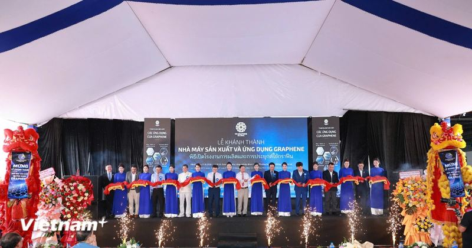
⚡
⚡
⚡
⚡
Sếp AMD: Không ai biết AI 5 năm nữa ra sao, nên hạ tầng phải đủ linh hoạt để thích ứng
Sếp AMD: Không ai biết AI 5 năm nữa ra sao, nên hạ tầng phải đủ linh hoạt để thích ứng Theo Tuấn Lê | 31/10/2026 19:05 PM | Công nghệ Theo dõi Cafebiz.vn trên Tại AI Infra Summit vừa qua, lãnh đạo AMD khu vực châu Á - Th
⚡
Lãnh tụ tối cao Iran ra loạt chỉ thị nóng, cảnh báo rắn với Mỹ và Israel
Lãnh tụ tối cao Iran Mojtaba Khamenei - Ảnh: WANA/REUTERS Ngày 31-10, Hãng thông tấn IRNA đưa tin ông Mojtaba Khamenei đã đưa ra một loạt chỉ thị chiến lược trong cuộc gặp với các chỉ huy cấp cao của lực lượng vũ trang I
⚡
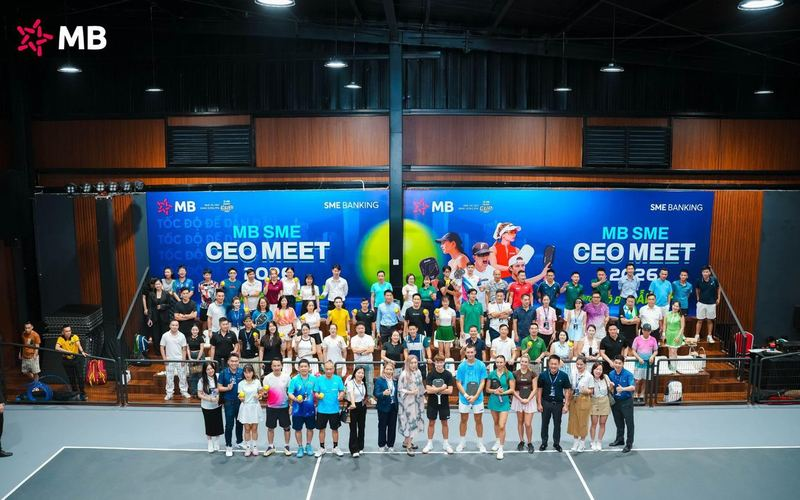
🔥M
🔥
🔥
Đề xuất âm thanh cảnh báo ô tô điện khi đi chậm: Có phù hợp với giao thông ùn tắc?
Cục Đăng kiểm Việt Nam đang lấy ý kiến dự thảo quy chuẩn kỹ thuật quốc gia trong lĩnh vực đăng kiểm, thay thế QCVN 09:2024/BGTVT. Trong đó có đề xuất liên quan đến hệ thống cảnh báo bằng âm thanh (AVAS) trên ô tô điện. K
🔥
🔥
🔥
🔥
Quảng Ninh mở đường kết nối chuỗi cung ứng, thương mại điện tử với Indonesia
Phiên thảo luận về thương mại, đầu tư và hạ tầng trong kỷ nguyên số và xanh trong khuôn khổ Meet Indonesia 2026. Ảnh: Lê Hồng Nhung - Mekong ASEAN. Trong khuôn khổ Hội nghị Gặp gỡ Indonesia 2026 (Meet Indonesia 2026) tổ
🔥
Tăng trưởng cao cần khơi thông nguồn vốn, giảm chi phí đầu vào cho doanh nghiệp
Tại phiên thảo luận về tình hình kinh tế - xã hội sáng ngày 31/10, các đại biểu Quốc hội nhấn mạnh, muốn đạt mục tiêu tăng trưởng cao cần khơi thông nguồn vốn, giảm lãi suất cho vay thực tế và tháo gỡ chi phí vật liệu, n
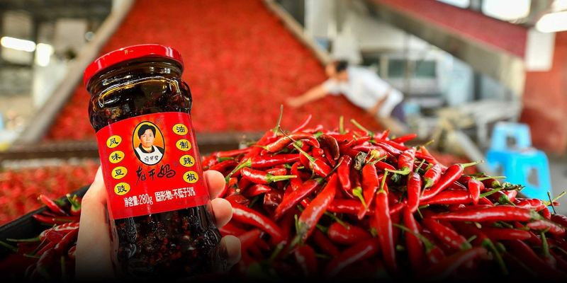
🔥"Vạ miệng" khoe dùng AI thay thế con người, thương hiệu quốc dân của Trung Quốc lãnh hậu quả: Doanh số có lúc giảm 90%
"Vạ miệng" khoe dùng AI thay thế con người, thương hiệu quốc dân của Trung Quốc lãnh hậu quả: Doanh số có lúc giảm 90% Theo Nguyễn Hải | 31/10/2026 09:19 AM | Công nghệ Theo dõi Cafebiz.vn trên Ngay sau đó, thương hiệu t
🔥
⚡
An Thịnh Phúc Niên, dấu ấn Thương hiệu quốc gia trong hành trình kiến tạo tương lai đủ đầy
Bảo vệ hiện tại, chuẩn bị cho tương lai Ở tuổi 40, anh Trần Anh Sơn, Hà Nội đang có nhiều kế hoạch tài chính cần chuẩn bị: chăm lo cho cha mẹ lớn tuổi, chuẩn bị cho gia đình nhỏ và từng bước tích lũy cho tuổi nghỉ hưu. A
⚡
[Video] Thời sự 24h ngày 31/10/2026: Đại biểu Quốc hội đề nghị đánh giá lại việc tổ chức kỳ thi tốt nghiệp THPT
Tiếp tục chương trình Kỳ họp thứ Hai, Quốc hội khóa XVI, sáng 30/10, Quốc hội thảo luận ở hội trường về tình hình thực hiện kế hoạch phát triển kinh tế - xã hội, tình hình thực hiện ngân sách Nhà nước và kế hoạch đầu tư
⚡
 ⚡
⚡
Cập nhật lợi nhuận quý 3/2026 của 27 ngân hàng sáng 31/10: Vietcombank, VietinBank, MB, BIDV, HDBank, Eximbank,...
Cập nhật lợi nhuận quý 3/2026 của 27 ngân hàng sáng 31/10: Vietcombank, VietinBank, MB, BIDV, HDBank, Eximbank,... Theo Minh Vy | 31/10/2026 18:32 PM | Kinh doanh Theo dõi Cafebiz.vn trên Có 6 ngân hàng lãi trước thuế hơ
🔥
🔥
🔥
🔥
Tuổi Trẻ Startup Award 2026: Lần đầu có vòng 'Chinh phục', Ngôi sao vàng khởi nghiệp nhận 100 triệu đồng
Toàn cảnh lễ khởi động Tuổi Trẻ Startup Award ngày 12-8 2026 tại TP.HCM- Ảnh: DUYÊN PHAN Với chủ đề "Đổi mới sáng tạo cho đô thị tương lai", chương trình do Báo điện tử Tuổi Trẻ và Hội Liên hiệp Thanh niên Việt Nam TP.HC
🔥
Chính quyền Trump tăng tốc điều tra cáo buộc liên quan bầu cử giữa kỳ tại Alaska
Công tố viên liên bang cấp cao nhất tại Alaska là ông Michael Heyman phát biểu trong một cuộc họp báo hôm 30.10 rằng bài báo về vấn đề nói trên do tờ The New York Times đăng ngày 28.10 đã thúc đẩy việc huy động nhiều ngu
🔥
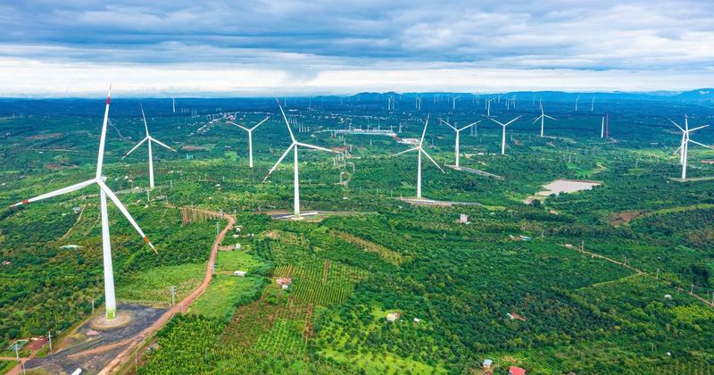
🔥
🔥
🔥
🔥
🔥
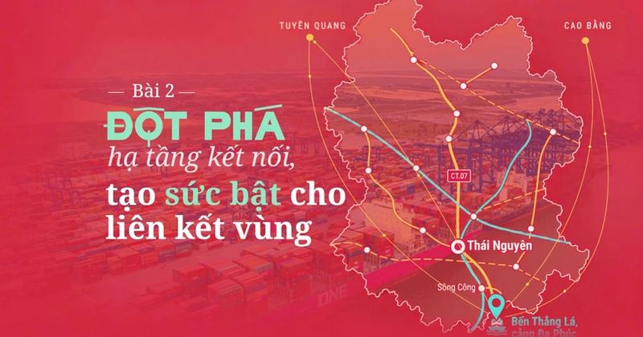
🔥
🔥
Mỹ duyệt bán 500 tên lửa Patriot cho Ukraine, ông Zelensky sẽ tới Thổ Nhĩ Kỳ đàm phán
Tên lửa Patriot do Mỹ chế tạo Theo thông cáo của Bộ Ngoại giao Mỹ ngày 30/10, Ukraine sẽ thanh toán số tên lửa đánh chặn này bằng các khoản đóng góp của Canada, Đức và Na Uy, thông qua chương trình US JUMPSTART, cùng với
🔥
🔥
🔥
Nga đàm phán xây dựng nhà máy điện hạt nhân quy mô lớn với 4 quốc gia châu Phi
Facebook Twitter Lưu bài viết Bản in Copy link Tập đoàn năng lượng hạt nhân quốc gia Rosatom của Nga đang đàm phán với Uganda, Ghana, Ethiopia và Ai Cập về khả năng xây dựng các nhà máy điện hạt nhân quy mô lớn, trong bố
🔥
🔥
Yêu chàng trai Trung Quốc, cô gái Bắc Ninh hoảng sợ khi về ra mắt lúc 3h sáng
Đòi chia tay ngay sau lần ra mắt Cuối năm 2025, Vũ Thị Hường (26 tuổi, quê xã Lục Ngạn, TP Bắc Ninh ) cùng chồng là anh Liu Xing Long (31 tuổi) quyết định rời thành phố, trở về quê chồng ở Chu Khẩu, tỉnh Hà Nam (Trung Qu
🔥
🔥
🔥
🔥
⚡
⚡
Biến sức mạnh của hệ sinh thái khách hàng thành cơ hội tăng trưởng cho doanh nghiệp
Với mạng lưới hơn 400.000 khách hàng doanh nghiệp nhỏ và vừa, cùng quan hệ với các doanh nghiệp lớn hoạt động trong nhiều lĩnh vực kinh tế, MB có lợi thế để trở thành cầu nối giữa những nhu cầu kinh doanh có khả năng bổ
 ⚡
⚡
Tỷ phú Phạm Nhật Vượng huy động 10.000 nhân sự, đưa máy đào hầm khổng lồ vào siêu dự án đường sắt 350 km/h
Tỷ phú Phạm Nhật Vượng huy động 10.000 nhân sự, đưa máy đào hầm khổng lồ vào siêu dự án đường sắt 350 km/h Theo Dương Ngọc | 31/10/2026 19:36 PM | Kinh doanh Theo dõi Cafebiz.vn trên Doanh nghiệp do tỷ phú Phạm Nhật Vượn
⚡
⚡
⚡
Vinhomes Green Paradise bước vào vòng bình chọn toàn cầu '7 kỳ quan đô thị tương lai'
Chiến dịch “7 kỳ quan đô thị tương lai” là cuộc tìm kiếm các biểu tượng đô thị mới trên toàn cầu, tôn vinh những dự án và thành phố tiên phong về phát triển bền vững, ứng dụng công nghệ, đổi mới sáng tạo và lấy con người
🔥
🔥
Xây dựng Trung tâm dữ liệu giao thông: Không để đầu tư manh mún, trùng lặp
Đại tướng Lương Tam Quang, Ủy viên Bộ Chính trị, Bộ trưởng Bộ Công an phát biểu tại Hội nghị - Ảnh: chinhphu.vn/Phương Nguyên Ủy viên Bộ Chính trị, Phó Thủ tướng Thường trực Chính phủ Phạm Gia Túc và Đại tướng Lương Tam
🔥
🔥
🔥
🔥
🔥
🔥
🔥
🔥
Thống đốc Phạm Đức Ấn nói về việc người dân gửi nhiều tiền vào ngân hàng
Giải trình các ý kiến đại biểu nêu tại phiên thảo luận về kinh tế - xã hội của Quốc hội sáng nay 31.10, Thống đốc Ngân hàng Nhà nước Phạm Đức Ấn cho biết, có một số vấn đề mà các đại biểu nêu, chuyên gia kinh tế, đại diệ
🔥
🔥
Từ giấc mơ số hóa Thành cổ Quảng Trị đến khát vọng đưa công nghệ Việt vươn xa
Đây cũng là 1 trong 15 giải pháp trí tuệ nhân tạo (AI) lọt vào vòng sơ khảo của Âu Lạc Grand Prize 2026 trị giá 1 triệu USD. Anh Thái Việt Ý, người sáng lập giải pháp Onflow chuyển dữ liệu quét 3D của hiện vật và di tích
🔥
Cập nhật lợi nhuận quý 3/2026 của 27 ngân hàng sáng 31/10: Vietcombank, VietinBank, MB, BIDV, HDBank, Eximbank,...
TIN MỚI Vietcombank tiếp tục đứng đầu về lợi nhuận trước thuế 9 tháng (LNTT) với 40.440 tỷ đồng, tăng 22,1% so với cùng kỳ. Tuy vậy, LNTT riêng quý 3 của ngân hàng đạt 11.218 tỷ đồng, gần như không đổi so với quý 3/2025.
🔥
Việt Nam vừa chứng kiến một kỷ lục chưa từng có, lần đầu tiên vượt ngưỡng 1.000 tỷ USD
Việt Nam vừa chứng kiến một kỷ lục chưa từng có, lần đầu tiên vượt ngưỡng 1.000 tỷ USD Theo Minh Hằng | 31/10/2026 09:53 AM | Kinh tế vĩ mô Theo dõi Cafebiz.vn trên Đây là tin vui với kinh tế Việt Nam trong 10 tháng đầu
🔥
🔥
🔥
🔥
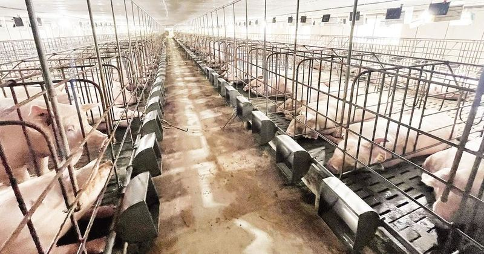
🔥 ⚡
⚡
⚡
⚡
Thông xe cao tốc phải chạy thật, không phải để lấy ngày, rồi 'đóng cửa' thi công tiếp
TIN MỚI Chậm tiến độ, giải ngân thấp Sáng 31/10, UBND TP. Cần Thơ họp với các bên liên quan về tiến độ Dự án cao tốc Châu Đốc - Cần Thơ - Sóc Trăng giai đoạn 1 (đoạn qua Cần Thơ hơn 132km). Ông Lê Minh Cường - Giám đốc B
⚡
⚡
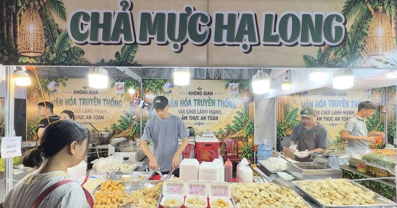
⚡
⚡
Lộ trình di tản dân trong lệnh ngừng bắn nhân đạo dài nhất giữa Nga-Ukraine
(Dân trí) - Những người muốn rời khỏi Oleshky (Alyoshki) ở vùng Kherson do Nga kiểm soát được di tản bằng xe buýt, máy bay và được lựa chọn đến Nga hoặc Ukraine. Nhóm người dân được di tản khỏi Oleshky (Alyoshki) (Ảnh: R
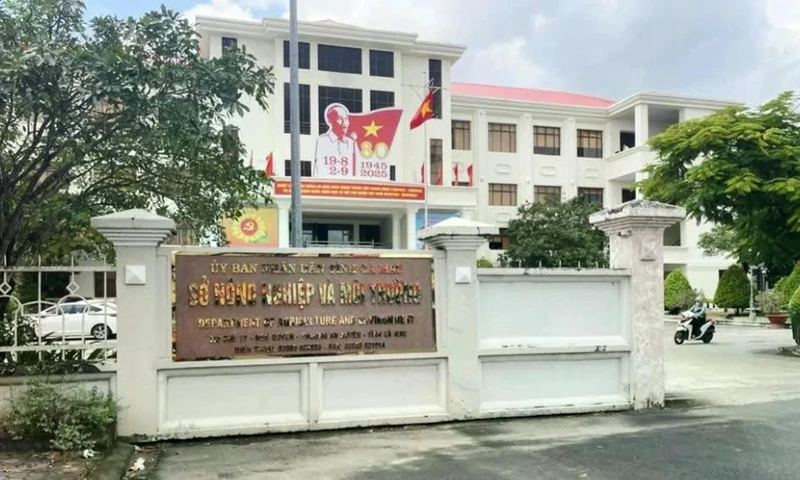
⚡
⚡
Phát huy vai trò của cộng đồng người Việt trong thúc đẩy di cư lao động tại Đức
Facebook Twitter Lưu bài viết Bản in Copy link Theo phóng viên TTXVN tại Đức, ngày 30/10, tại Nhà Văn hóa Đồng Xuân ở thủ đô Berlin, Liên hiệp hội người Việt Nam tại Đức (VBD Vietnam) phối hợp với Chương trình Định hướng
⚡
[Clip] Mâu thuẫn trong lúc ăn nhậu, hai nhóm công nhân cầm hung khí lao vào hỗn chiến
Camera an ninh ghi lại cảnh hai nhóm công nhân lao vào hỗn chiến sau chầu nhậu. Ngày 31/10, Công an xã Phú Giáo, TPHCM cho biết, Cơ quan Cảnh sát điều tra Công an TPHCM đã khởi tố 8 bị can liên quan hai nhóm công nhân dù
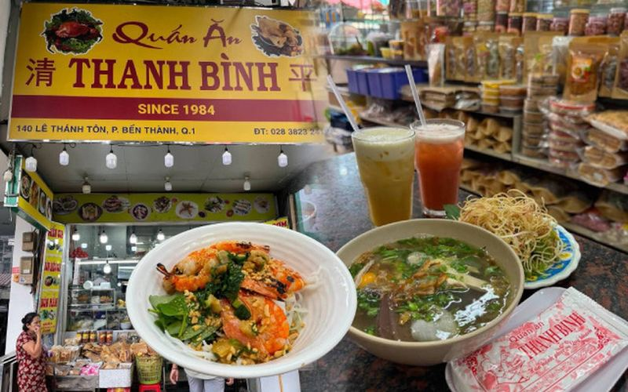
⚡Quán ăn 50 món, 40 tuổi ngay chợ Bến Thành đóng cửa vì không còn ai nối nghiệp, khách quen kéo đến bịn rịn chia tay
Quán ăn 50 món, 40 tuổi ngay chợ Bến Thành đóng cửa vì không còn ai nối nghiệp, khách quen kéo đến bịn rịn chia tay Theo Bích Ngọc | 31/10/2026 20:06 PM | Sống Theo dõi Cafebiz.vn trên Từ miến cua, miến gà đến hủ tiếu Na
⚡
[Video] Dự báo thời tiết đêm nay và ngày mai 1/11: Bắc Bộ sắp đón không khí lạnh, Nam Bộ cảnh báo lốc sét gió giật mạnh
Trong đêm nay và ngày mai, các tỉnh Bắc Bộ chịu ảnh hưởng của rìa phía nam rãnh áp thấp bị nén bởi một khối không khí lạnh mới ở phía bắc, khiến thời tiết nhìn chung chưa có nhiều thay đổi. Đêm nay, toàn vùng chỉ xuất hi
⚡
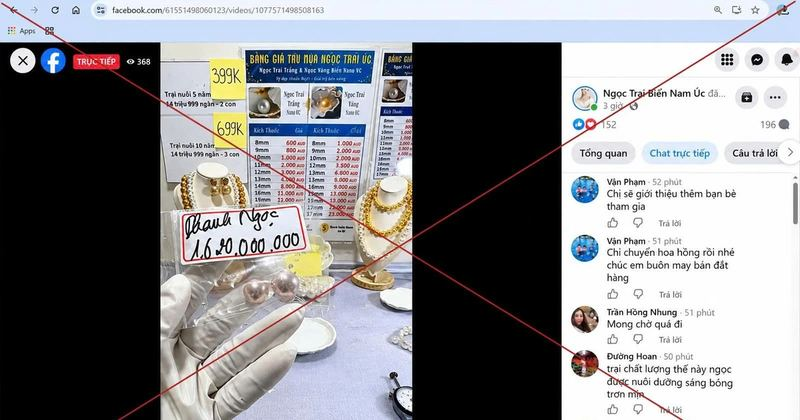
⚡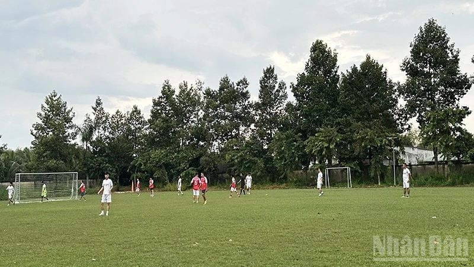
⚡
⚡
Điện Biên: Cất bốc, quy tập thêm năm hài cốt liệt sĩ chưa xác định danh tính
Cụ thể, trong số năm hài cốt chưa xác định danh tính được cất bốc, quy tập có một hài cốt liệt sĩ được cất bốc từ phần mộ trong diện tích đất của gia đình ông Hà Văn Sơn; bốn hài cốt được cất bốc từ bốn phần mộ tại Nghĩa
⚡
Tăng cường chủ động phòng, chống, ứng phó các loại hình thiên tai do ảnh hưởng của El Nino
Chỉ thị nêu: Theo báo cáo của Bộ Nông nghiệp và Môi trường, hiện tượng ENSO đang ở trạng thái El Nino, dự báo tiếp tục duy trì cường độ mạnh trong những tháng cuối năm 2026 và đầu năm 2027, làm gia tăng nguy cơ nắng nóng
⚡
Đại hội Thể dục thể thao tỉnh Lào Cai lần thứ I, năm 2026 thành công tốt đẹp
Đại hội Thể dục thể thao tỉnh Lào Cai lần thứ I diễn ra từ ngày 28 đến 31/10, với sự tham gia của 2.500 vận động viên, tranh tài ở 18 môn thể thao. Các nội dung thi đấu thu hút sự tham gia của các đoàn vận động viên đến
⚡
⚡
Tăng cường chủ động ứng phó với các loại hình thiên tai do ảnh hưởng của El Nino
Facebook Twitter Lưu bài viết Bản in Copy link Phó Thủ tướng Hồ Quốc Dũng ký Chỉ thị số 39/CT-TTg ngày 30/10/2026 của Thủ tướng Chính phủ về tăng cường chủ động phòng, chống, ứng phó với các loại hình thiên tai do ảnh hư
⚡
⚡
Mỹ, Hàn Quốc, Nhật Bản quyết tâm 'phi hạt nhân hóa hoàn toàn Triều Tiên'
Từ trái sang: Ngoại trưởng Hàn Quốc Cho Hyun, Ngoại trưởng Mỹ Marco Rubio và Ngoại trưởng Nhật Bản Toshimitsu Motegi chụp ảnh trong cuộc gặp bên lề Hội nghị ngoại trưởng Nhóm G20 tại thành phố Atlanta, bang Georgia, Mỹ n
⚡
Hà Nội đăng cai cuộc họp Đại hội đồng Liên đoàn các Tổ chức Phụ nữ ASEAN lần thứ 22
Facebook Twitter Lưu bài viết Bản in Copy link Từ ngày 04 đến 05/11/2026, Hội Liên hiệp Phụ nữ Việt Nam đăng cai tổ chức Cuộc họp Hội đồng Liên đoàn, Ban Lãnh đạo và Đại hội đồng Liên đoàn các Tổ chức Phụ nữ ASEAN (ACWO)
T
⚡
⚡
⚡
Sunshine Group: Lợi nhuận trước thuế 9 tháng vượt 5.900 tỷ đồng, tổng tài sản gần 121.000 tỷ đồng
Sunshine Group: Lợi nhuận trước thuế 9 tháng vượt 5.900 tỷ đồng, tổng tài sản gần 121.000 tỷ đồng Ánh Dương | 31/10/2026 18:26 PM | Kinh doanh Theo dõi Cafebiz.vn trên Công ty Cổ phần Tập đoàn Sunshine (Sunshine Group, m
⚡
⚡
🔥
🔥
🔥
🔥
Chai nước 6.000 đồng bán trong trường 9.000 đồng là có thật, khi đơn vị trúng thầu quyết định giá cả
Nhiều trường học tại TP.HCM kỳ vọng có cơ chế đặc thù riêng cho ngành giáo dục, giảm giá thuê mặt bằng để hạ giá suất ăn cho học sinh - Ảnh: H.T Nêu ý kiến tại diễn đàn Quốc hội sáng 31-10, đại biểu Châu Quỳnh Dao đặt câ
🔥
🔥
Quảng Ngãi yêu cầu bảo đảm tiến độ cung ứng khoáng sản phục vụ các công trình
Theo đó, Sở Công thương thực hiện tốt công tác đánh giá trữ lượng khoáng sản ; nâng cao trách nhiệm, chất lượng thẩm định, tham mưu Ủy ban nhân dân tỉnh cấp phép thăm dò, khai thác khoáng sản; tháo gỡ những khó khăn, vướ
🔥
Chi phí nhiên liệu tăng 61%, công ty mẹ Vietnam Airlines lỗ 284 tỉ đồng trong quý 3
Vietnam Airlines đạt doanh thu hợp nhất hơn 114.000 tỉ đồng sau 9 tháng - Ảnh: HVN Tổng công ty Hàng không Việt Nam - Vietnam Airlines (HVN) vừa công bố chi phí nhiên liệu của công ty mẹ trong quý 3-2026 tăng 4.360 tỉ đồ
🔥
Lo ngại đề xuất cấm chuyển nhượng hợp đồng mua bán nhà ở hình thành trong tương lai
Lo ngại đề xuất cấm chuyển nhượng hợp đồng mua bán nhà ở hình thành trong tương lai Theo Duy Quang | 31/10/2026 15:25 PM | Kinh doanh Theo dõi Cafebiz.vn trên TPO - Cấm chuyển nhượng hợp đồng mua nhà ở hình thành trong t
🔥
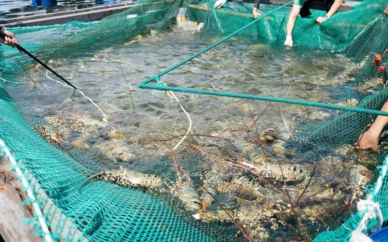
🔥Doanh thu hàng nghìn tỷ đồng, một 'ông lớn' chuyên bán tôm hùm cho Trung Quốc sắp IPO
Doanh thu hàng nghìn tỷ đồng, một 'ông lớn' chuyên bán tôm hùm cho Trung Quốc sắp IPO Quảng Định | 31/10/2026 13:13 PM | Kinh doanh Theo dõi Cafebiz.vn trên Theo đại diện doanh nghiệp, KLC SeaFood đang là nhà xuất khẩu t
🔥
🔥
Lời khuyên cho những ai giờ này vẫn còn đang dùng chiếc iPhone 14 Pro Max "đời cổ"
Lời khuyên cho những ai giờ này vẫn còn đang dùng chiếc iPhone 14 Pro Max "đời cổ" Theo Huỳnh Duy | 31/10/2026 11:00 AM | Công nghệ Theo dõi Cafebiz.vn trên Một thiết bị 4 năm tuổi có lẽ không còn ổn như bạn nghĩ. Nhiều
🔥
🔥
🔥
[Video] Thu nộp ngân sách gần 3.200 tỷ đồng phí cao tốc đầu tư công sau hơn 7 tháng
Theo đó, từ ngày 2/3/2026, Cục Đường bộ Việt Nam đã tổ chức thu phí tại các dự án thành phần đầu tư công trên tuyến cao tốc Bắc - Nam phía Đông. Công tác thu phí triển khai theo từng nhóm tuyến gắn với tiến độ hoàn thành
🔥
Ông lớn chăn ga gối đệm Everon báo lãi tăng 64%, mở showroom 121 m² để thử nghiệm mô hình mới
EVE: Giá hiện tại Thay đổi Xem hồ sơ doanh nghiệp TIN MỚI CTCP Everpia (mã chứng khoán: EVE), đơn vị sở hữu thương hiệu chăn ga gối đệm Everon, vừa công bố báo cáo tài chính hợp nhất quý III/2026 với doanh thu thuần đạt
🔥
Lợi nhuận LG Electronics tăng gần 56% sau 9 tháng, đơn hàng làm mát trung tâm dữ liệu AI vượt 3.000 tỷ won
Lợi nhuận LG Electronics tăng gần 56% sau 9 tháng, đơn hàng làm mát trung tâm dữ liệu AI vượt 3.000 tỷ won .Theo Pv | 31/10/2026 08:03 AM | Công nghệ Theo dõi Cafebiz.vn trên Trong khi các mảng kinh doanh điện tử truyền
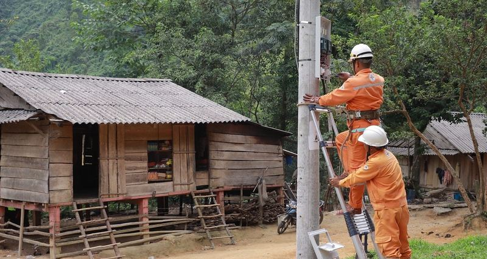
🔥
⚡
⚡
Người ngoài ngành bước vào nghề môi giới: "Tấm đệm" lương cứng Vinhomes hóa giải nỗi lo sinh kế ra sao?
Người ngoài ngành bước vào nghề môi giới: "Tấm đệm" lương cứng Vinhomes hóa giải nỗi lo sinh kế ra sao? Ánh Dương | 31/10/2026 20:00 PM | Kinh doanh Theo dõi Cafebiz.vn trên Rời bỏ công việc quen thuộc để bước chân vào n
⚡
Phát hành trái phiếu đô thị và công trình tại Trung tâm Tài chính quốc tế
Giải áp lực vốn đầu tư hạ tầng Tại Kỳ họp thứ sáu, Hội đồng nhân dân Thành phố Hồ Chí Minh khóa XI chính thức thông qua Nghị quyết quy định việc phát hành trái phiếu đô thị và trái phiếu công trình tại VIFC-HCMC. Chủ trư
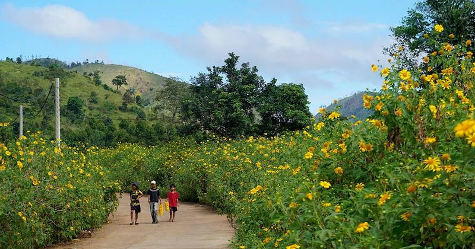
🔥
🔥
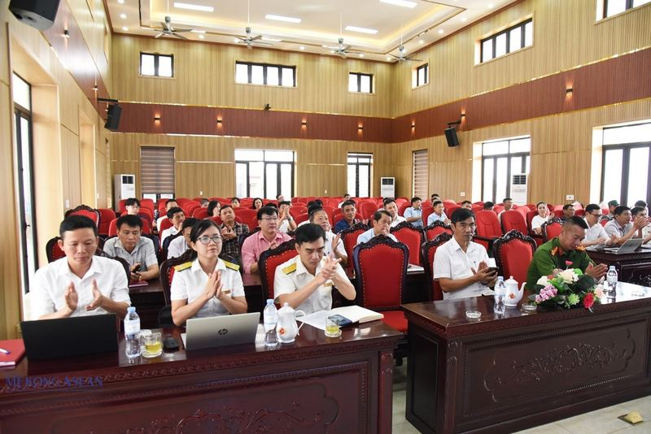
🔥
🔥
Thêm nhà máy 'xanh' của Đan Mạch tại Hưng Yên, mỗi năm giảm 1.600 tấn CO2
Trình diễn robot với công nghệ AI tại nhà máy Spectre - Ảnh: Đại sứ quán Đan Mạch "Dự án này cho thấy hợp tác Đan Mạch - Việt Nam có thể thúc đẩy phát triển công nghiệp đồng thời giảm phát thải", bà Lina Gandløse Hansen,
🔥
🔥
Hà Nội chấp thuận chủ trương đầu tư Khu đô thị Bắc Thăng Long gần 100.000 tỷ đồng
Phối cảnh Khu đô thị đa mục tiêu Bắc Thăng Long Urban City Dự án có quy mô diện tích khoảng 465,45 ha, trong đó diện tích nghiên cứu dự án khoảng 375,36 ha; diện tích đường Võ Văn Kiệt (Vành đai 3), Tỉnh lộ 23 và mặt nướ
🔥
🔥
Lãi suất ngày 31/10 tại Agribank, Vietcombank, BIDV, VietinBank, MB, VPBank, Techcombank, Sacombank, HDBank,...
TIN MỚI Khảo sát bảng lãi suất huy động tiền gửi online niêm yết tại 35 ngân hàng ngày 31/10/2026, lãi suất tiền gửi có sự chênh lệch đáng kể giữa các ngân hàng và giữa các kỳ hạn. Lãi suất 3 tháng: Nhiều ngân hàng cùng
🔥
🔥
ĐHQG Hà Nội vi phạm thu học phí, tuyển sinh và giao sai ngân sách hơn 215 tỷ đồng
Nhiều vi phạm trong thu học phí và quản lý tài chính Theo kết luận thanh tra, trong giai đoạn trên, VNU có một số vi phạm hành chính liên quan thu học phí các chương trình đào tạo chưa đạt chuẩn. Cụ thể, Trường Quản trị
🔥
Ngân hàng đang cho vay 20,8 triệu tỉ đồng, hơn 77% vào sản xuất kinh doanh
Dư nợ tín dụng toàn nền kinh tế đạt khoảng 20,8 triệu tỉ đồng - Ảnh: T.L. Theo Ngân hàng Nhà nước, tính đến ngày 26-10, dư nợ tín dụng toàn nền kinh tế đạt khoảng 20,8 triệu tỉ đồng, tăng 11,94% so với cuối năm 2025. Hơn
🔥
🔥
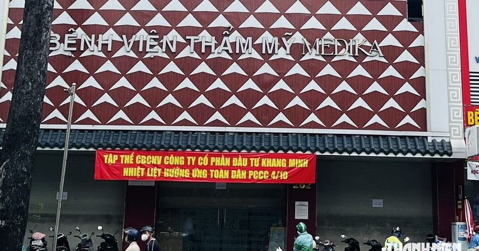
🔥Yêu cầu Bệnh viện thẩm mỹ Kỳ Hòa - Medika TP.HCM tạm ngừng phẫu thuật, thủ thuật
Ngày 31.10, Sở Y tế TP.HCM cho biết đã có văn bản gửi Bệnh viện thẩm mỹ Kỳ Hòa - Medika (262 - 264 - 266 đường 3 Tháng 2, phường Hòa Hưng) yêu cầu tạm ngừng hoạt động phẫu thuật, thủ thuật. Theo Sở Y tế, ngày 8.4, đơn vị
🔥
🔥
🔥
ĐBQH đề nghị bổ sung một số chỉ tiêu gắn trực tiếp với các chương trình, chính sách trọng tâm
Đại biểu Quốc hội Lê Nữ Thuỳ Dương - Ảnh: chinhphu.vn Sáng nay (31/10), Quốc hội tiếp tục thảo luận về kinh tế-xã hội trong phiên họp toàn thể tại Hội trường. Bên lề phiên họp, đại biểu Quốc hội Lê Nữ Thuỳ Dương (Đồng Na
🔥
Doanh thu hợp nhất hơn 114.000 tỷ đồng, Vietnam Airlines duy trì tăng trưởng hai con số
Doanh thu hợp nhất vượt 114.000 tỷ đồng Trong 9 tháng vừa qua, dù kinh tế thế giới còn nhiều biến động, giá nhiên liệu ở mức cao nhưng với nguồn lực sẵn có và các kịch bản ứng phó linh hoạt, Vietnam Airlines vẫn duy trì
🔥
🔥
🔥
🔥
🔥
🔥
Đám cưới độc lạ ở miền Tây: Nhà trai rước dâu chỉ bằng một vài bước chân
Đám cưới sát vách, chú rể bước chân ra cửa là đón được cô dâu Mới đây, đám cưới của anh Đặng Hân Hoan, làm nghề điện lạnh tự do và chị Dương Thị Thanh Thúy, làm trong lĩnh vực thực phẩm, tổ chức tại xã Bình Hàng Trung (Đ
🔥
Elon Musk “troll” vụ Binance bị hack, CZ nói thẳng: “Tôi rất tôn trọng anh, làm ơn hãy dừng lại”
Elon Musk “troll” vụ Binance bị hack, CZ nói thẳng: “Tôi rất tôn trọng anh, làm ơn hãy dừng lại” Theo Hồng Duy | 31/10/2026 09:14 AM | Kinh doanh Theo dõi Cafebiz.vn trên Đồng sáng lập Binance đề nghị tỷ phú Mỹ ngừng chế
🔥
🔥
🔥
🔥
6 giờ sáng, mẹ bị xuất huyết nặng, bé trai 6 tuổi tự gọi cấp cứu, tự chuẩn bị đồ: Mạnh mẽ cho đến khi bố tới mới bật khóc
TIN MỚI Trong video, người mẹ bất ngờ bị xuất huyết tử cung nghiêm trọng, ngã quỵ tại nhà. Bên cạnh chị lúc ấy chỉ có cậu con trai 6 tuổi. Cậu bé không đứng sững tại chỗ mà gọi đến số cấp cứu 120 của Trung Quốc, tự mặc q
🔥
🔥
🔥
Đúng ngày 11/11, Việt Nam có thêm cửa hàng của thương hiệu nổi tiếng vừa tăng 9 bậc trên bảng xếp hạng toàn cầu: Trị giá 20,5 tỷ USD, nằm trong trung tâm thương mại hơn 5.200 tỷ đồng
TIN MỚI Ngày 11/11/2026, thương hiệu thời trang Nhật Bản UNIQLO dự kiến chính thức khai trương cửa hàng UNIQLO AEON MALL Hạ Long tại tỉnh Quảng Ninh. Đây là cửa hàng đầu tiên của UNIQLO tại địa phương này, đồng thời nâng
🔥
Xử phạt chủ quản trị trang Facebook "Huế tin tức 24h" thông tin sai sự thật
Facebook Twitter Lưu bài viết Bản in Copy link Ngày 30/10, Công an thành phố Huế đã ra quyết định xử phạt vi phạm hành chính đối với anh T.K.G. (sinh năm 1989, trú tại Tổ dân phố 1 Mỹ An, phường Dương Nỗ, thành phố Huế)
🔥
🔥
🔥
Becamex Group ‘rót’ thêm hơn 375 tỷ đồng vào doanh nghiệp làm dự án đường cao tốc
BCM: Giá hiện tại Thay đổi Xem hồ sơ doanh nghiệp TIN MỚI Tập đoàn Đầu tư và Phát triển Công nghiệp Becamex - CTCP (Becamex Group, MCK: BCM, sàn HoSE) vừa công bố Nghị quyết của HĐQT về việc góp vốn tăng vốn điều lệ cho
🔥
🔥
🔥
Trung Quốc kéo dài thời hạn lưu trú cho người có thẻ đi lại doanh nhân APEC
Facebook Twitter Lưu bài viết Bản in Copy link Trung Quốc sẽ kéo dài thời gian lưu trú tối đa cho người sở hữu thẻ đi lại doanh nhân APEC (APEC Business Travel Card) tại nước này từ 60 ngày lên 90 ngày, có hiệu lực từ ng
🔥
🔥
🔥
🔥
🔥
🔥
Chứng chỉ tiền gửi một ngân hàng "đắt khách", số dư giấy tờ có giá tăng vọt
TIN MỚI Theo báo cáo tài chính hợp nhất quý 3/2026, số dư phát hành giấy tờ có giá của Sacombank (mã STB) tại ngày 30/9 đạt 85.546 tỷ đồng, tăng 46.270 tỷ đồng so với cuối quý 2. Trong hơn hai năm trước đó, khoản mục này
⚡
⚡
⚡
Diễn đàn quốc gia 'Văn hóa với doanh nghiệp' 2026: Kiến tạo sức mạnh tổng hợp quốc gia từ văn hóa kinh doanh
Diễn đàn quốc gia thường niên “Văn hóa với doanh nghiệp” năm 2026 sẽ diễn ra ngày 8/11 tại Hà Nội. Ảnh: BTC Diễn đàn diễn ra nhân dịp kỷ niệm 10 năm Ngày Văn hóa doanh nghiệp Việt Nam và Cuộc vận động "Xây dựng văn hóa d
⚡
⚡
⚡
🔥
🔥
🔥
🔥
🔥
🔥
Thông xe cao tốc phải chạy thật, không phải để lấy ngày, rồi 'đóng cửa' thi công tiếp
Chậm tiến độ, giải ngân thấp Sáng 31/10, UBND TP. Cần Thơ họp với các bên liên quan về tiến độ Dự án cao tốc Châu Đốc - Cần Thơ - Sóc Trăng giai đoạn 1 (đoạn qua Cần Thơ hơn 132km). Ông Lê Minh Cường - Giám đốc Ban Quản
🔥
🔥
🔥
🔥
Quảng Trị: Ngư dân tử vong do tai nạn lao động khi đang khai thác hải sản
Facebook Twitter Lưu bài viết Bản in Copy link Ngày 31/10, Đồn Biên phòng Cửa khẩu cảng Gianh (Bộ đội Biên phòng tỉnh Quảng Trị) cho biết, trong quá trình khai thác hải sản trên biển, một ngư dân không may gặp tai nạn la
🔥
🔥
🔥
Hợp tác BSC - Hana Securities: Dấu ấn trong kết nối thị trường vốn Việt Nam - Hàn Quốc
BSC và HSC ký thỏa thuận hợp tác chiến lược 2022 Trong xu hướng đó, quan hệ hợp tác chiến lược giữa Công ty Cổ phần Chứng khoán BIDV (BSC) và Công ty chứng khoán Hana (Hana Securities) là sự kết hợp thế mạnh của hai bên
🔥
Giả định nhà máy hóa dầu cháy lớn, hơn 2.500 người, 147 phương tiện, robot, chó nghiệp vụ cứu nạn
Ngày 31.10, Bộ Công an và UBND TP.HCM phối hợp cùng Công ty TNHH Hóa dầu Long Sơn (LSP), tổ chức diễn tập phương án chữa cháy và cứu nạn, cứu hộ cấp bộ tại Tổ hợp Hóa dầu Long Sơn, xã Long Sơn (TP.HCM). Khu vực gặp sự cố
🔥
Giám đốc công ty cùng chị gái bán hơn 14.000 sản phẩm kém chất lượng, thu lợi 'khủng'
Ngày 31/10, Cơ quan CSĐT Công an TP Đồng Nai cho biết đã khởi tố thêm 3 đối tượng liên quan đến đường dây kinh doanh thực phẩm chức năng, hóa mỹ phẩm không bảo đảm chất lượng qua Facebook, nâng tổng số bị can bị khởi tố
 🔥
🔥
Sáng 31/10: Giá bạc chịu áp lực giảm, đối mặt nguy cơ lùi về vùng 47-48 USD/ounce
Cụ thể, tại thời điểm 11 giờ 50 phút ngày 31/10, theo Vietnam Metals Exchange (VME), giá bạc 99.99 (chưa phí, thuế VAT) tại Hà Nội niêm yết ở mức 1.505.000 đồng/lượng (mua vào) và 1.572.000 đồng/lượng (bán ra), chênh lệc
🔥
Tài chính doanh nghiệp 24/7: Vinhomes lãi hơn 75.000 tỷ đồng, HDBank và GELEX Electric ghi nhận lợi nhuận nổi bật
Tài chính doanh nghiệp 24/7 ngày 31/10/2026 ghi nhận nhiều diễn biến đáng chú ý trong hoạt động sản xuất kinh doanh, đầu tư và tài chính của doanh nghiệp. Vinhomes báo lãi hơn 75.000 tỷ đồng sau 9 tháng; HDBank đạt lợi n
🔥
🔥
🔥
ĐBQH nêu việc tréo ngoe, đường không thể thông xe do nhà đầu tư BOT sợ giảm doanh thu
Sáng 31/10, Quốc hội tiếp tục thảo luận về tình hình thực hiện kế hoạch phát triển kinh tế - xã hội, ngân sách nhà nước năm 2026 và kế hoạch, dự toán năm 2027. Đại biểu Nguyễn Khánh Vũ (đoàn Quảng Trị) nêu tình trạng nhi
🔥
🔥
Thành tựu tăng trưởng củng cố niềm tin vào khả năng chống chịu của nền kinh tế
Đại biểu Quốc hội đánh giá cao những thành tựu tăng trưởng kinh tế - xã hội 9 tháng đầu năm 2026, cho rằng kết quả đạt được trong bối cảnh thế giới nhiều bất ổn đã củng cố niềm tin vào khả năng chống chịu của nền kinh tế
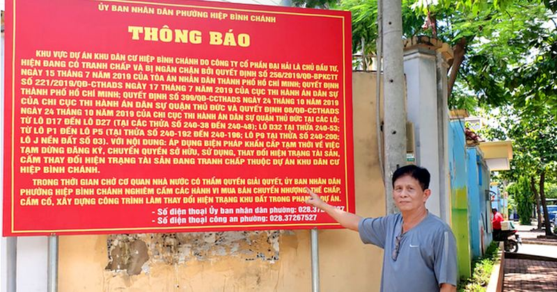
🔥Hủy án vụ hai cựu lãnh đạo Công ty Đại Hải liên quan hàng trăm nền đất ở khu dân cư Sông Đà
Trước đây, UBND phường Hiệp Bình Chánh cũ đã cắm biển thông báo tại khu dân cư - Ảnh: ÁI NHÂN Đây là vụ việc kéo dài nhiều năm liên quan đến nhiều nền đất tại khu dân cư phường Hiệp Bình Chánh, TP Thủ Đức cũ (còn gọi là
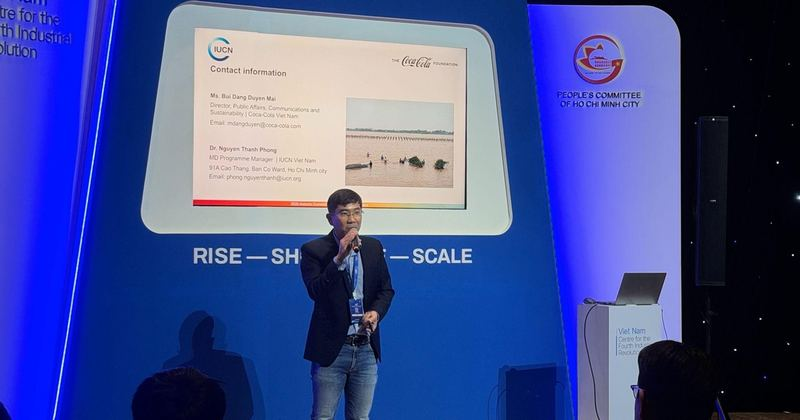
🔥
🔥
HDBank đạt 18.379 tỉ đồng lợi nhuận 9 tháng, tổng tài sản vượt 1,14 triệu tỉ đồng
Ngân hàng TMCP Phát triển TP.HCM (HDBank, HOSE: HDB) công bố kết quả kinh doanh 9 tháng năm 2026 với lợi nhuận trước thuế hợp nhất đạt 18.379 tỉ đồng, tăng 24,2% so với cùng kỳ; tổng tài sản đạt 1,143 triệu tỉ đồng. Kết
🔥
HDBank đạt 18.379 tỷ đồng lợi nhuận 9 tháng, tổng tài sản vượt 1,14 triệu tỷ đồng
TIN MỚI Ngân hàng TMCP Phát triển TP.HCM (HDBank, HOSE: HDB) công bố kết quả kinh doanh 9 tháng năm 2026 với lợi nhuận trước thuế hợp nhất đạt 18.379 tỷ đồng, tăng 24,2% so với cùng kỳ; tổng tài sản đạt 1,143 triệu tỷ đồ
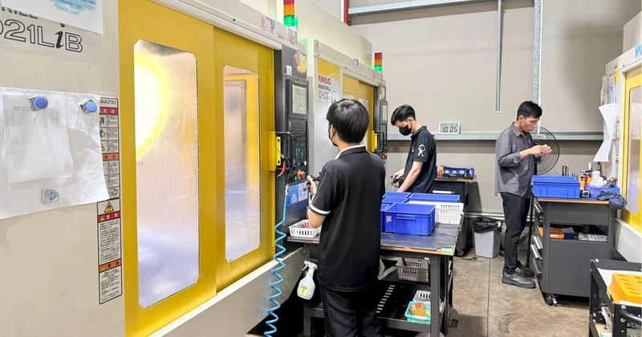
🔥
🔥
Chủ tịch HSC: Nhiều doanh nghiệp không có nổi một giám đốc tài chính đủ tầm để trình bày với nhà đầu tư ngoại
Chủ tịch HSC: Nhiều doanh nghiệp không có nổi một giám đốc tài chính đủ tầm để trình bày với nhà đầu tư ngoại Quảng Định | 31/10/2026 08:27 AM | Kinh doanh Theo dõi Cafebiz.vn trên Nếu tiến hành một đợt IPO hay phát hành
🔥
🔥
🔥
🔥
🔥
🔥
🔥
🔥
Đánh giá chi tiết pin và công nghệ sạc trên dòng OPPO Find X10: Sẵn sàng cho ngày dài bận rộn
Đánh giá chi tiết pin và công nghệ sạc trên dòng OPPO Find X10: Sẵn sàng cho ngày dài bận rộn Ánh Dương | 31/10/2026 08:00 AM | Công nghệ Theo dõi Cafebiz.vn trên Thế hệ điện thoại mới từ OPPO vừa ra mắt đã mang đến nhiề
🔥
Cập nhật lợi nhuận ngân hàng tối 30/10: Vietcombank, MB, VietinBank, BIDV, Eximbank,....
Cập nhật lợi nhuận ngân hàng tối 30/10: Vietcombank, MB, VietinBank, BIDV, Eximbank,.... Theo Minh Vy | 31/10/2026 07:47 AM | Kinh doanh Theo dõi Cafebiz.vn trên Cập nhật mới nhất, 26 ngân hàng đã công bố báo cáo tài chí
🔥
Việt Nam vừa chứng kiến một kỷ lục chưa từng có, lần đầu tiên vượt ngưỡng 1.000 tỷ USD
TIN MỚI Ảnh minh họa: ĐSPL Theo Cục Xuất nhập khẩu (Bộ Công Thương), trong 10 tháng đầu năm 2026, hoạt động xuất nhập khẩu hàng hóa của Việt Nam tiếp tục ghi nhận mức tăng trưởng cao, với tổng kim ngạch ước đạt 1.010,6 t
🔥
🔥
Tỷ phú Phạm Nhật Vượng đang làm dự án gần 24.000 tỷ đồng tại tỉnh có điểm cực Tây của Tổ quốc: Từng tuyển 7.000 công nhân, thu nhập tới 33 triệu đồng/tháng, nay có diễn biến mới
TIN MỚI Mới đây, lãnh đạo tỉnh Điện Biên có buổi kiểm tra thực địa, họp bàn đánh giá tiến độ triển khai và đề xuất giải pháp tháo gỡ khó khăn, vướng mắc tại một số dự án trên địa bàn phường Mường Thanh, xã Thanh Yên và x
🔥
🔥
🔥
Lợi nhuận MSB tăng tốc trong quý III, thu nhập lãi thuần tiếp tục là động lực chính
Ngân hàng TMCP Hàng Hải Việt Nam (MSB) ghi nhận lợi nhuận trước thuế quý III/2026 tăng hơn 27% so với cùng kỳ, đưa lợi nhuận lũy kế 9 tháng lên gần 5.440 tỷ đồng. Thu nhập lãi thuần tăng trưởng trên 21%, tín dụng mở rộng
🔥
🔥
Công nghệ ‘két sắt mù’ giúp AI tự mua hàng: Khỏi lo lộ thẻ, coi chừng... cháy túi
Giao ví cho AI "đi chợ hộ" dễ đối mặt với rủi ro tài khoản bị trừ tiền liên tục - Ảnh minh họa Với sự phát triển của các tác nhân AI (AI Agent), máy móc ngày càng có khả năng tự điều khiển chuột, thao tác trên trình duyệ
🔥
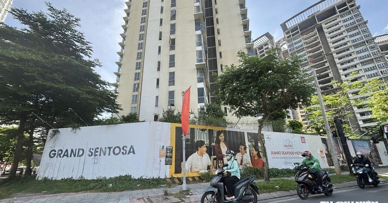
🔥Cấm chuyển nhượng nhà ở hình thành trong tương lai: Lo thị trường đóng băng
Không thể hạn chế quyền lựa chọn của người dân Trả lời Thanh Niên , Phó chủ tịch Hiệp hội Bất động sản (BĐS) VN Trần Quốc Dũng nói thẳng không đồng tình với đề xuất trên. "Kiểm soát đầu cơ, ngăn thổi giá BĐS, tạo điều ki
🔥
[Video] Hoàn thiện thể chế, khơi thông nguồn vốn, phát triển hệ sinh thái doanh nghiệp
Các đại biểu cho rằng, dù GDP 9 tháng đầu năm tăng 9,01%, doanh nghiệp trong nước vẫn gặp nhiều khó khăn về thủ tục hành chính, chi phí sản xuất và khả năng tiếp cận vốn. Vì vậy, cần tiếp tục rà soát, hoàn thiện hệ thống
🔥
🔥
🔥
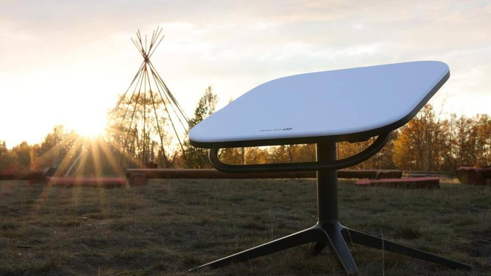
🔥
⚡
Phái bộ Liên hợp quốc tại Somalia chấm dứt sứ mệnh sau hơn 30 năm hoạt động
Facebook Twitter Lưu bài viết Bản in Copy link Phái bộ hỗ trợ chuyển tiếp của Liên hợp quốc tại Somalia (UNTMIS) ngày 31/10 đã chính thức kết thúc hoạt động sau 2 năm chuyển tiếp, khép lại hơn 3 thập kỷ triển khai các ho
⚡
Bế mạc hội thi tàu tốt, hội thao huấn luyện tàu cấp Cảnh sát biển Việt Nam năm 2026
Đây là một sự kiện lớn, có ý nghĩa quan trọng, là ngày hội đua tài, biểu dương lực lượng tàu của toàn lực lượng Cảnh sát biển Việt Nam. Chiều 31/10, lễ bế mạc hội thi, hội thao đã được trang trọng tổ chức tại Bộ Tư lệnh
⚡
⚡
⚡
⚡
⚡
Rời showbiz lấy chồng, cuộc sống Hoa hậu Hoàn Vũ Việt Nam đầu tiên giờ ra sao?
Rời showbiz lấy chồng, cuộc sống Hoa hậu Hoàn Vũ Việt Nam đầu tiên giờ ra sao? Theo Ngọc Thanh /VTC News | 31/10/2026 20:35 PM | Sống Theo dõi Cafebiz.vn trên Được đánh giá là mỹ nhân đa tài nhưng Hoa hậu Hoàn vũ đầu tiê
⚡
Sau 3 năm trốn truy nã, 'phó tướng' của trùm buôn xe sang Khanh Super từ Thái Lan về đầu thú
Sau 3 năm trốn truy nã, 'phó tướng' của trùm buôn xe sang Khanh Super từ Thái Lan về đầu thú Theo Nguyễn Dũng | 31/10/2026 20:33 PM | Xã hội Theo dõi Cafebiz.vn trên Sau hơn 3 năm lẩn trốn ở nước ngoài, Huỳnh Xuân Vấn, n
⚡
⚡
Gần 2.000 tỷ đồng đổ vào thị trường chăm sóc thú cưng trực tuyến trong 3 tháng
(Dân trí) - Hơn 22,9 triệu sản phẩm dành cho chó, mèo được bán trong quý III, thu gần 2.000 tỷ đồng. Đáng chú ý, giá bán tăng gần 48% dù lượng hàng tiêu thụ giảm. Theo dữ liệu của Metric, thị trường thương mại điện tử gh
⚡
⚡
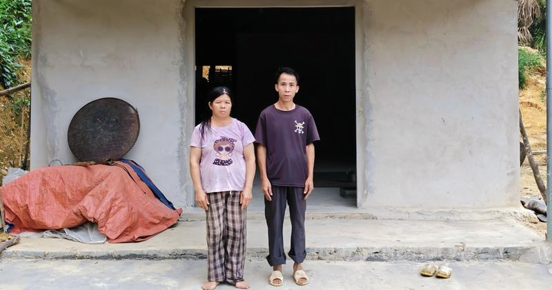
⚡
⚡
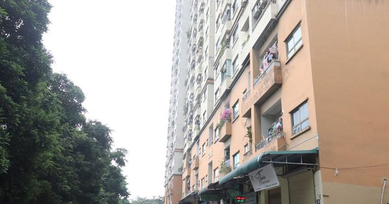
⚡
⚡
Cao tốc Châu Đốc - Cần Thơ - Sóc Trăng qua Cần Thơ thiếu nguồn hơn 2,6 triệu m³ đá
TIN MỚI Ngày 31-10, UBND TP Cần Thơ làm việc với các nhà thầu thi công các dự án thành phần 2, 3 và 4 thuộc cao tốc Châu Đốc - Cần Thơ - Sóc Trăng. Theo Ban Quản lý dự án đầu tư xây dựng công trình giao thông và nông ngh
⚡
Người dân xã Châu Pha kiến nghị xem xét giá bồi thường mở rộng đường ĐT 995B
Chiều 31-10, UBND xã Châu Pha tổ chức hội nghị triển khai kế hoạch thu hồi đất thực hiện dự án nâng cấp, mở rộng đường Bà Rịa - Châu Pha - Hắc Dịch (ĐT 995B), đoạn qua địa bàn xã. Người dân xã Châu Pha nêu ý kiến về giá
⚡
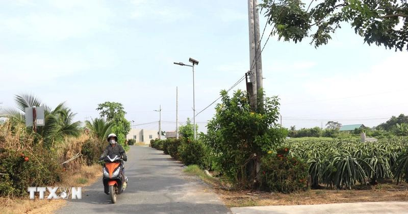
⚡Xã An toàn khu - Tri ân quá khứ, tạo động lực phát triển quê hương Tây Ninh
Facebook Twitter Lưu bài viết Bản in Copy link Ngày 15/10/2026, xã An Lục Long, tỉnh Tây Ninh chính thức được công nhận là xã An toàn khu thời kỳ kháng chiến chống thực dân Pháp và đế quốc Mỹ. Đây là sự ghi nhận những đó
⚡
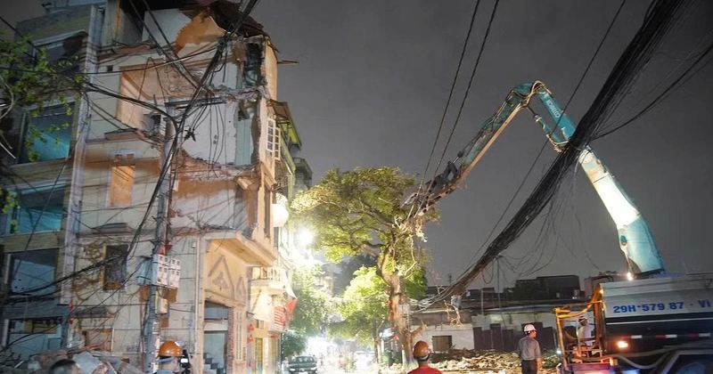
⚡Người dân bị thu hồi đất cần điều kiện gì để được mua nhà ở xã hội không cần bốc thăm?
TIN MỚI UBND thành phố Hà Nội vừa ban hành dự thảo quyết định Quy định chi tiết trình tự, tiêu chí để các chủ sở hữu nhà, người sử dụng đất bị thu hồi để thực hiện các dự án thuộc trường hợp Nhà nước thu hồi đất trên địa
⚡
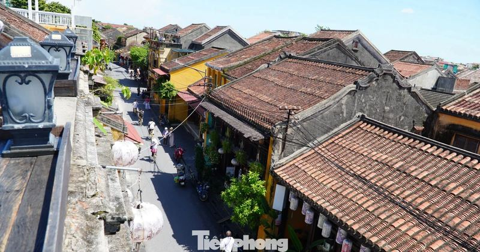
⚡
⚡
Đồng Tháp và Prey Veng ký kết phòng, chống ma túy, tội phạm qua biên giới
Tại buổi lễ, hai bên đã thông qua nội dung biên bản hợp tác phòng, chống ma túy và tội phạm. Theo đó, thống nhất thực hiện việc báo cáo định kỳ trao đổi thông tin tình hình chung của công tác phòng, chống ma túy và các l
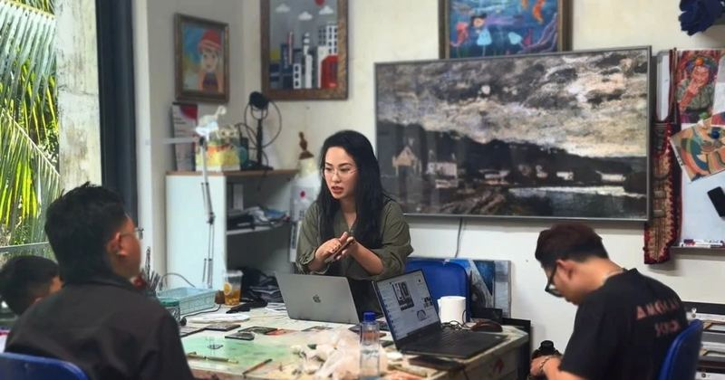
⚡Diễn viên Diễm Hằng: Đưa sáng tạo nghệ thuật thành ngôn ngữ biểu đạt của trẻ em
Đưa văn hóa Việt vào ứng dụng mỹ thuật Malena’s Dream Canvas (Hà Nội) là nơi Diễm Hằng mong muốn mở rộng trải nghiệm mỹ thuật cho trẻ em, giúp các em không chỉ học vẽ mà còn khám phá khả năng đưa ý tưởng vào đời sống. Đi
⚡
⚡
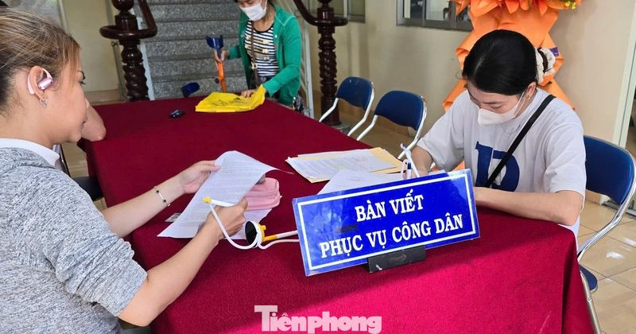
⚡
⚡
Quảng Ngãi: Không để khoảng cách địa lý làm khó người dân tiếp cận dịch vụ công
Facebook Twitter Lưu bài viết Bản in Copy link Sau sáp nhập, địa giới hành chính cấp xã mở rộng khiến việc đi lại để giải quyết thủ tục hành chính của người dân gặp khó khăn, nhất là ở vùng sâu, vùng xa, nhóm người yếu t
⚡
⚡
⚡
Truy tố 31 bị can trong vụ án tại Công ty Khoáng sản và Luyện kim Việt Trung
Ngày 31-10, thông tin từ Viện KSND tối cao, cơ quan này đã ban hành cáo trạng truy tố 31 bị can trong vụ án ra xét xử. Trong đó, bị can Bùi Thanh Bình, cựu Tổng Giám đốc VTM, bị truy tố về 3 tội: “Vi phạm quy định về quả

Mr Pips: 'Lúc buồn chán, có nhiều tiền đến đâu vẫn thấy cuộc sống vô nghĩa'
Ngày 31.10, TAND TP.Hà Nội tiếp tục xét xử Mr Pips Phó Đức Nam trong vụ án lừa đảo ngoại hối, chứng khoán, chiếm đoạt gần 1.600 tỉ đồng. Mr Pips đã có những lời khai gây chú ý về tình trạng sức khỏe của bản thân như mẹ v
Vì sao các tổ chức quốc tế ngày càng tin Việt Nam có thể tăng trưởng 2 con số?
Dự báo GDP Việt Nam đạt 11% trong năm 2027 của Standard Chartered đã tạo dấu ấn trong giới tài chính quốc tế. Nhiều định chế tài chính, tổ chức nghiên cứu và chuyên gia kinh tế quốc tế cũng liên tiếp nâng triển vọng đối
Elite Fitness tuổi 16: Đầu tư toàn diện, nâng chuẩn trải nghiệm tập luyện
Sau 16 năm phát triển, Elite Fitness xem mỗi cột mốc không phải là đích đến mà là khởi đầu cho những chuẩn mực cao hơn. Chiến dịch lần nàyđánh dấu bước tiến mới của thương hiệu với chiến lược đầu tư đồng bộ vào chuyên mô
Nhờ đâu lợi nhuận 9 tháng 2026 của Tổng công ty Khoáng sản TKV gấp 2,5 lần cùng kỳ?
Vimico hoạt động chính trong lĩnh vực khai thác khoáng sản - Ảnh: Vimico Tổng công ty Khoáng sản TKV - CTCP (Vimico, mã: KSV) vừa công bố kết quả kinh doanh quý 3-2026 với số liệu tích cực. Giá bán vàng, bạc... tăng giúp
🔥
🔥
'Bom tấn' Cần Giờ chính thức vào vòng bình chọn '7 kỳ quan đô thị tương lai'
Chiến dịch "7 kỳ quan đô thị tương lai" là cuộc tìm kiếm những kỳ quan đô thị mới trên toàn hành tinh. Thông qua việc tôn vinh các thành phố và dự án tiên phong về phát triển bền vững, ứng dụng công nghệ, đổi mới sáng tạ
🔥
CEO OpenAI Sam Altman cho rằng người dùng giữ RAM trong máy tính cá nhân là quá phí phạm, nên dành cho các trung tâm dữ liệu
CEO OpenAI Sam Altman cho rằng người dùng giữ RAM trong máy tính cá nhân là quá phí phạm, nên dành cho các trung tâm dữ liệu Đồng An | 31/10/2026 13:41 PM | Công nghệ Theo dõi Cafebiz.vn trên Sam Altman cho rằng bộ nhớ h
🔥
Bộ trưởng Bộ Tài chính giải trình về tăng trưởng, ngân sách và đầu tư công
Sáng 31/10, phát biểu giải trình tại phiên thảo luận về tình hình kinh tế-xã hội và ngân sách nhà nước, Bộ trưởng Tài chính Ngô Văn Tuấn cho biết, qua thảo luận tại tổ đã có 241 lượt ý kiến của đại biểu Quốc hội. Các ý k
🔥
🔥
🔥
🔥
🔥
🔥
"Cứ giao phó hết cho ChatGPT”: Cảnh báo của Sam Altman về nguy cơ con người bị AI chi phối
"Cứ giao phó hết cho ChatGPT”: Cảnh báo của Sam Altman về nguy cơ con người bị AI chi phối Thiên Minh | 31/10/2026 10:02 AM | Công nghệ Theo dõi Cafebiz.vn trên Trong một phát biểu, CEO OpenAI Sam Altman đã vẽ ra một kịc
🔥
🔥
🔥
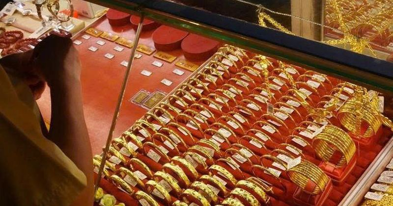
🔥Giá vàng miếng, vàng nhẫn hôm nay (31/10) tại SJC, DOJI, Bảo Tín Mạnh Hải, PNJ,... tiếp tục giảm mạnh tới 2,6 triệu đồng/lượng: Bao nhiêu tiền một chỉ?
TIN MỚI Đến khoảng 8h sáng ngày 31/10, giá vàng trong nước tiếp tục điều chỉnh giảm mạnh so với mức niêm yết trước đó. Cụ thể, SJC, Bảo Tín Mạnh Hải, DOJI và PNJ cùng niêm yết giá vàng miếng ở mức 136–139 triệu đồng/lượn
🔥
🔥
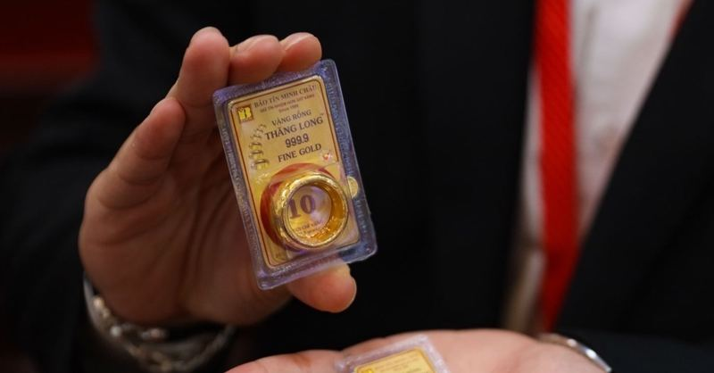
🔥Giá vàng hôm nay 31/10: Tuột dốc, vàng SJC ‘bốc hơi’ 2,4 triệu đồng/lượng
Bảng giá vàng trong nước hôm nay 31/10 Sản phẩm Triệu đồng/lượng Hôm nay (31/10) Hôm qua (30/10) Giá mua Giá bán Giá mua Giá bán SJC TPHCM 136 -2,4 139 -2,4 138,4 141,4 BTMH Kim Gia Bảo 133,8 137,8 136,2 140,2 Doji TPHCM
🔥
🔥
🔥
🔥
🔥
OBC Holdings được vinh danh thương hiệu triển vọng, A&K Tower ghi dấu với tiềm năng kết nối hạ tầng
OBC Holdings được vinh danh ở hạng mục “Thương hiệu triển vọng” trong lĩnh vực phát triển bất động sản theo định hướng giá trị thực Kiên định với định hướng phát triển bất động sản giá trị thực Sau 02 giải thưởng quốc tế
🔥
🔥
Tập đoàn Đức và Tây Ban Nha được chọn cung cấp hạ tầng cho đồng euro kỹ thuật số
Facebook Twitter Lưu bài viết Bản in Copy link Theo phóng viên TTXVN tại Berlin, Ngân hàng Trung ương châu Âu (ECB) đã lựa chọn Deutsche Telekom của Đức và Telefónica của Tây Ban Nha làm đối tác công nghệ cung cấp hạ tần
🔥
🔥
Khi "ông lớn" mạng xã hội Meta bất ngờ tung Style Sketch - vũ khí AI định hình lại tủ đồ của cả thế giới
Khi "ông lớn" mạng xã hội Meta bất ngờ tung Style Sketch - vũ khí AI định hình lại tủ đồ của cả thế giới Thiên Minh | 31/10/2026 07:01 AM | Công nghệ Theo dõi Cafebiz.vn trên Không kèn không trống, tập đoàn Meta vừa chín
🔥
🔥
🔥
🔥
🔥
Một tập đoàn tư nhân Việt Nam chi hơn 774 tỷ đồng xây nhà máy ở nước ngoài
(Dân trí) - Cùng với làn sóng vốn FDI đổ vào Việt Nam, các doanh nghiệp Việt cũng đẩy mạnh đầu tư ra nước ngoài, chủ động mở rộng mạng lưới sản xuất ra thị trường quốc tế. Số liệu từ Cục Thống kê (Bộ Tài chính), tổng vốn
🔥
Văn Phú báo lãi 221 tỷ trong 9 tháng đầu năm nhờ tăng tốc mở bán các dự án tại Hải Phòng, Hà Nội, TPHCM
TIN MỚI Theo báo cáo tài chính quý 3/2026 của Công ty Cổ phần Phát triển bất động sản Văn Phú, kết thúc 9 tháng đầu năm 2026 công ty ghi nhận doanh thu thuần từ bán hàng và cung cấp dịch vụ ở mức 1.284,4 tỷ đồng, tăng 56
🔥
🔥
🔥
⚡
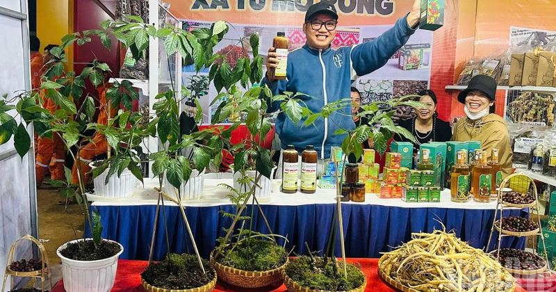
⚡
⚡
⚡
⚡
Hội nghị COP17 đạt thỏa thuận đẩy nhanh hành động bảo tồn đa dạng sinh học
Facebook Twitter Lưu bài viết Bản in Copy link Ngày 31/10, hơn 100 quốc gia đã đạt được thỏa thuận quan trọng nhằm đẩy nhanh hành động bảo tồn đa dạng sinh học, khép lại Hội nghị lần thứ 17 Các bên tham gia Công ước của
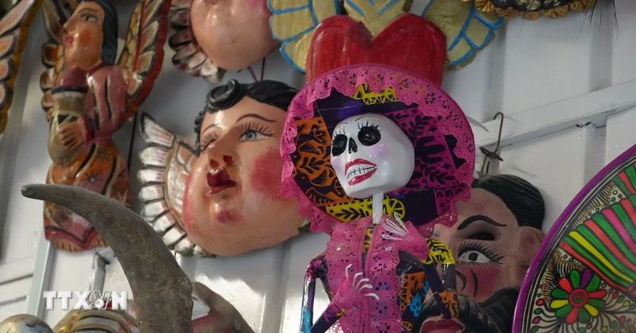
⚡
⚡
⚡
⚡
🔥
Gia Lai nâng chất lượng y tế cơ sở, hướng tới mục tiêu 100% xã đạt chuẩn vào 2030
Facebook Twitter Lưu bài viết Bản in Copy link Tỉnh Gia Lai đặt mục tiêu đến năm 2030 có 100% số xã đạt Bộ tiêu chí quốc gia về y tế, đồng thời phấn đấu đến năm 2035, toàn bộ xã, phường duy trì vững chắc và tiếp tục nâng
🔥
Brazil triệu tập nhà ngoại giao Argentina liên quan việc ông Bolsonaro sang Mỹ
Ông Bolsonaro. Ảnh: Shutterstock Theo hãng tin Al Jazeera, Bộ Ngoại giao Brazil hôm 30/10 đã triệu tập bà Maria Emilia Cortes, Đại biện lâm thời Argentina tại Brazil. Tuy nhiên, Ngoại trưởng Argentina Pablo Quirno phủ nh
🔥
🔥
🔥
 🔥
🔥
🔥
Khi Jensen Huang và Nvidia bất ngờ rơi vào "vòng xoáy" thông tin nhạy cảm
Khi Jensen Huang và Nvidia bất ngờ rơi vào "vòng xoáy" thông tin nhạy cảm Thiên Minh | 31/10/2026 14:00 PM | Công nghệ Theo dõi Cafebiz.vn trên Trong cuộc đua khốc liệt định hình kỷ nguyên trí tuệ nhân tạo, nơi mỗi con c
🔥
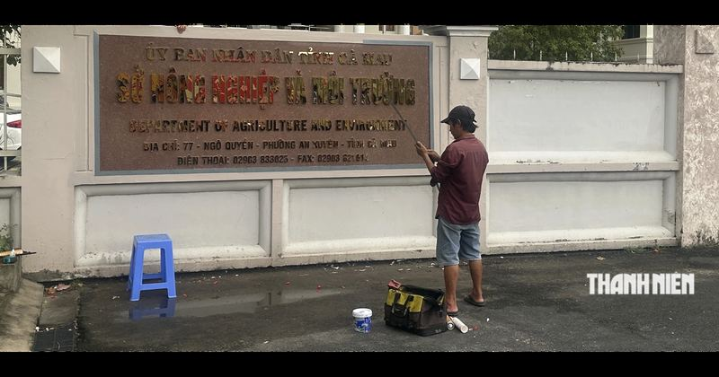
🔥
🔥
🔥
Chuyên gia khuyên cách để người trẻ 'ly khai' sự nhiễu loạn của thế giới ảo
Ngày 31.10, tại Phố sách Hà Nội đã diễn ra Ngày hội Văn hóa đọc trong thanh thiếu nhi thủ đô với Lễ phát động phong trào đọc sách và tọa đàm Văn hóa đọc trong thanh thiếu nhi thủ đô. Tại đây, các bạn trẻ đã được giao lưu
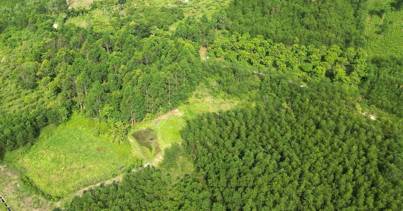
🔥
🔥
🔥
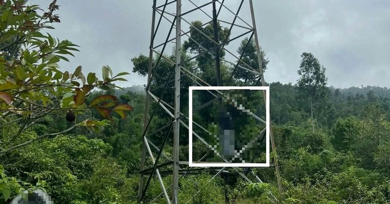
🔥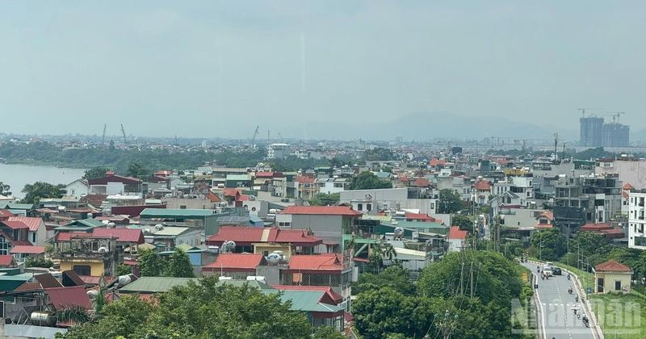
🔥
🔥
🔥
AI đặt ra yêu cầu mới, văn học tiếp tục sứ mệnh phục vụ đất nước và nhân dân
GS.TS Lê Văn Lợi, Chủ tịch Viện Hàn lâm Khoa học xã hội Việt Nam phát biểu khai mạc Hội thảo - Ảnh: chinhphu.vn/Thu Giang Sáng 31/10, Viện Văn học (Viện Hàn lâm Khoa học xã hội Việt Nam) tổ chức Hội thảo khoa học quốc tế
🔥
🔥
Vietcombank dẫn đầu lợi nhuận 9 tháng, nhóm ngân hàng nhỏ tăng trưởng mạnh
Sau 9 tháng năm 2026, lợi nhuận ngành Ngân hàng tiếp tục tăng trưởng, với Vietcombank giữ ngôi đầu, VietinBank bám sát, trong khi một số ngân hàng tăng trưởng bằng lần và không ít ngân hàng ghi nhận lợi nhuận sụt giảm mạ
🔥
Phó Chủ tịch Thái Nguyên Nguyễn Thị Loan làm Thứ trưởng Bộ Nông nghiệp và Môi trường
Quyết định có hiệu lực kể từ ngày ký (30/10). Tân Thứ trưởng Bộ Nông nghiệp và Môi trường Nguyễn Thị Loan 51 tuổi, quê quán xã Định Hóa, tỉnh Thái Nguyên. Bà có trình độ chuyên môn là cử nhân Kinh tế nông nghiệp, kỹ sư Q
🔥
Nghi phạm đầu độc nghiên cứu sinh người Việt bị truy tố thêm tội mưu sát
Nghi phạm đầu độc nghiên cứu sinh người Việt bị truy tố thêm tội mưu sát Mỹ Vương Ái Lệ bị truy tố thêm tội mưu sát cấp độ hai trong nghi án đầu độc nghiên cứu sinh K.T tại Đại học Wyoming. Công tố viên bang Wyoming ngày
🔥
Tăng cường chủ động phòng, chống, ứng phó với các loại hình thiên tai do ảnh hưởng của El Nino
Tăng cường chủ động phòng, chống, ứng phó với các loại hình thiên tai do ảnh hưởng của El Nino Chỉ thị nêu: Theo báo cáo của Bộ Nông nghiệp và Môi trường, hiện tượng ENSO đang ở trạng thái El Nino, dự báo tiếp tục duy tr
🔥
Vietnam Airlines báo lãi trở lại trong quý 3 sau khoản lỗ hơn 600 tỷ đồng
Trong 9 tháng đầu năm, Vietnam Airlines đã thực hiện hơn 122.000 chuyến bay, vận chuyển hơn 20 triệu lượt hành khách. Ảnh: VNA Ngày 30/10, Tổng công ty Hàng không Việt Nam - CTCP (Vietnam Airlines, HoSE: HVN) công bố báo
🔥
Toàn cảnh dự án gần 5.000 tỷ đồng trên đầm Thị Nại vừa được điều chỉnh quy hoạch
Toàn cảnh dự án gần 5.000 tỷ đồng trên đầm Thị Nại vừa được điều chỉnh quy hoạch Theo Nguyễn Gia | 31/10/2026 10:07 AM | Kinh tế vĩ mô Theo dõi Cafebiz.vn trên Sau nhiều năm ngưng trệ, hoang hoá, siêu dự án Eco Bay gần 5
🔥
Người dân quan tâm sau khi trang trải cuộc sống, họ còn tích lũy được bao nhiêu
Sáng 31/10, Quốc hội tiếp tục thảo luận về tình hình thực hiện kế hoạch phát triển kinh tế - xã hội năm 2026 và dự kiến kế hoạch phát triển kinh tế - xã hội năm 2027; tình hình thực hiện ngân sách nhà nước năm 2026, dự t
🔥
🔥
Chủ tịch Saigontourist Group bàn về đổi mới sáng tạo và tiếp lửa cho người trẻ đất Mũi khởi nghiệp
Tại Diễn đàn đổi mới sáng tạo Việt Nam 2026, bà Nguyễn Thị Ánh Hoa, Chủ tịch Hội đồng thành viên Saigontourist Group, có bài phát biểu “Tri ân những người đi mở cõi phương Nam – Cùng Cà Mau vươn mình” , gợi lại câu chuyệ
🔥
🔥
Thế giới sáng 31-10: Trực thăng rơi ở Himalaya làm 6 người thiệt mạng, Phái bộ gìn giữ hòa bình LHQ tại Tây Sahara nguy cơ chấm dứt hoạt động
Hai dự thảo về Tây Sahara đều thất bại Hội đồng Bảo an Liên hợp quốc không thông qua hai dự thảo nghị quyết về Tây Sahara, khiến nhiệm vụ của Phái bộ Liên hợp quốc về trưng cầu dân ý tại Tây Sahara (MINURSO) đứng trước n
🔥
Lợi nhuận LG Electronics tăng gần 56% sau 9 tháng, đơn hàng làm mát trung tâm dữ liệu AI vượt 3.000 tỷ won
TIN MỚI LG Electronics vừa công bố kết quả kinh doanh quý III/2026 với doanh thu hợp nhất đạt 23,82 nghìn tỷ won và lợi nhuận hoạt động 781,9 tỷ won. Tính chung 9 tháng đầu năm, doanh thu của tập đoàn đạt 71,38 nghìn tỷ
🔥
Sớm xử lý bất cập thu phí điện tử đường bộ, bảo đảm quyền lựa chọn của người dân
Phó Thủ tướng Thường trực Chính phủ Phạm Gia Túc yêu cầu các bộ, cơ quan liên quan có giải pháp xử lý bất cập trong hoạt động thu phí sử dụng đường bộ, bảo đảm chủ phương tiện được quyền lựa chọn dịch vụ thanh toán, khôn
🔥
🔥
4 mỹ nhân vừa được Bộ VHTT&DL khen thưởng: 1 năm kiếm hơn 7.800 tỷ đồng, 10 năm thu 42,9 tỷ lượt view top 1 toàn cầu
TIN MỚI Vừa qua, tại Lễ trao giải Văn hóa và Nghệ thuật Đại chúng Hàn Quốc lần thứ 17 diễn ra tại Seoul, BLACKPINK chính thức trở thành nhóm nhạc Kpop đầu tiên nhận Huân chương Văn hóa hạng 4 Okgwan. Giải thưởng cấp quốc
🔥
Đoàn đại biểu Quốc hội TP Hà Nội sẽ tổ chức giám sát dự án đường Vành đai 4 - Vùng Thủ đô
TIN MỚI Cầu Hồng Hà nằm trên tuyến đường Vành đai 4 - Vùng Thủ đô Hà Nội. Ảnh: Thái Hùng Kế hoạch giám sát được chia thành 5 giai đoạn cụ thể. Trong đó, đoàn giám sát sẽ khảo sát thực địa trên tuyến phía Tây tại 4 điểm t
🔥
Việt Nam có cặp anh em sinh đôi cùng tốt nghiệp Bách khoa, cùng du học Đức rồi cùng về nước làm giảng viên tại một trường
TIN MỚI Mới đây, câu chuyện về hai anh em sinh đôi cùng tốt nghiệp Đại học Bách khoa Hà Nội, lần lượt du học Đức rồi trở về Việt Nam làm giảng viên tại Đại học Kinh tế Quốc dân đang thu hút sự chú ý trên mạng xã hội. Cả
🔥
🔥
Nam NSƯT SN 1961 có bạn gái kém 18 tuổi: "Cái tủ lạnh là thứ giá trị nhất trong nhà tôi"
TIN MỚI Mới đây, nghệ sĩ ưu tú Chí Trung đã chia sẻ về quan điểm sống của mình trên trang cá nhân. Anh nói: "Ba đời mà không giàu thì biết đâu đời thứ 4 sẽ giàu. Cổ nhân có câu, không ai giàu ba họ, không ai khó ba đời.
🔥
Hoàn thành tích hợp Sổ sức khỏe điện tử lên VNeID cho 100% người dân trước 30/6/2027
TIN MỚI Văn phòng Trung ương Đảng vừa ban hành Thông báo Kết luận của đồng chí Thường trực Ban Bí thư tại Hội nghị sơ kết 1 năm thực hiện Nghị quyết số 72-NQ/TW, ngày 9/9/2025 của Bộ Chính trị về một số giải pháp đột phá
🔥
Công an có thông báo mới liên quan đến định danh điện tử VNeID và căn cước công dân
TIN MỚI Trước đó, vợ chồng anh Nguyễn Văn Đạt (trú tại xã Lâm Thao, tỉnh Phú Thọ) nhận được cuộc gọi từ số điện thoại lạ. Người gọi tự xưng là cán bộ làm công tác chính sách xã hội tại Ủy ban nhân dân xã Xuân Lũng, hướng
🔥
🔥
🔥
🔥
🔥
🔥
🔥
🔥
Huyền thoại cello Mischa Maisky đến Hà Nội song tấu cùng nghệ sỹ Đinh Hoài Xuân
Facebook Twitter Lưu bài viết Bản in Copy link Vào ngày 2/11, chương trình hòa nhạc “Cello Fundamento” lần thứ 13 sẽ diễn ra tại Nhà hát Hồ Gươm với nhân vật chính là nghệ sỹ cello nổi tiếng thế giới Mischa Maisky. “Cell
🔥
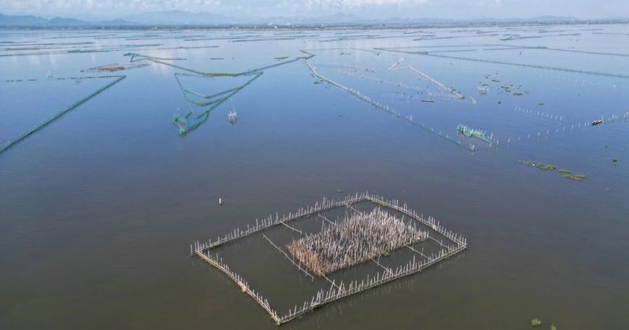
🔥
🔥
Thêm tổ chức liên quan và người thân Chủ tịch Novaland giao dịch cổ phiếu NVL
NVL: Giá hiện tại Thay đổi Xem hồ sơ doanh nghiệp TIN MỚI CTCP Tập đoàn Đầu tư Địa ốc No Va (Novaland, mã: NVL, sàn HoSE) công bố kết quả và thông báo giao dịch cổ phiếu của người nội bộ và người có liên quan của người n
 🔥
🔥
🔥
Ăn rau dền mỗi ngày suốt 6 tháng, người phụ nữ 38 tuổi bất ngờ khi đi khám
TIN MỚI Rau dền là loại rau vô cùng quen thuộc, giàu dưỡng chất và xuất hiện thường xuyên trên mâm cơm của nhiều gia đình. Tuy nhiên, quan điểm "ăn càng nhiều càng tốt" đôi khi lại dẫn đến những hệ lụy sức khỏe không ai
🔥
🔥
Tổng Bí thư, Chủ tịch nước Tô Lâm tiếp Đặc phái viên của Tổng thống Azerbaijan
Chào mừng ông Elchin Amirbayov đến Việt Nam, Tổng Bí thư, Chủ tịch nước khẳng định, Việt Nam trân trọng những tình cảm tốt đẹp và sự ủng hộ, giúp đỡ quý báu mà Nhà nước và nhân dân Azerbaijan đã dành cho Việt Nam trong s
🔥
8 năm đưa con trai đi chữa ung thư máu, vợ chồng nghèo hết cách tính bán nhà
Căn nhà của gia đình chị Nguyễn Thị Huyên và anh Nguyễn Văn Bảo ở thôn Sơn Trạch, xã Phong Nha, tỉnh Quảng Trị, mới hoàn thành phần thô, bên trong không có tài sản gì đáng giá. Vợ chồng chị có ba người con, hiện hai con
🔥
🔥
🔥
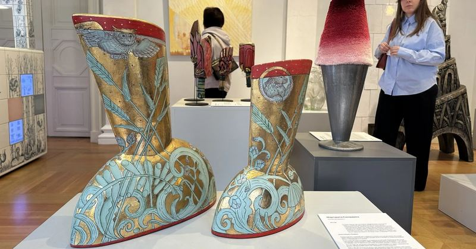
🔥
🔥
Jariyah Shah, sao mai mang dòng máu Việt Nam được Carrick gọi lên đội 1 MU là ai?
Jariyah Shah và con trai của Wayne Rooney Jariyah Shah sinh năm 2009 tại xứ sở chuột túi. Anh sở hữu nền tảng lý lịch đặc biệt với cha mang quốc tịch Pakistan và mẹ là người Việt Nam. Sự pha trộn dòng máu cùng quá trình
🔥
Sunshine Group: Lợi nhuận trước thuế 9 tháng vượt 5.900 tỷ đồng, tổng tài sản gần 121.000 tỷ đồng
KSF: Giá hiện tại Thay đổi Xem hồ sơ doanh nghiệp TIN MỚI Lợi nhuận trước thuế 9 tháng 2026 đạt hơn 5.900 tỷ Theo Báo cáo tài chính hợp nhất, lũy kế 9 tháng đầu năm 2026, Sunshine Group ghi nhận lợi nhuận trước thuế hơn
🔥
Nhận định bóng đá Chelsea vs MU, 19h30 ngày 31/10: Định đoạt tương lai HLV Carrick
Nhận định trước trận đấu Trên khán đài Old Trafford, HLV Michael Carrick vẫn nhận được sự ủng hộ của đông đảo người hâm mộ, điều không còn dành cho các cầu thủ, INEOS hay gia đình Glazer. Nhờ vậy, HLV MU có thêm thời gia
🔥
🔥
Tin tức thế giới 31-10: Ngoại trưởng Nga tiết lộ cuộc gặp Mỹ; Nhóm EU chỉ trích Ngoại trưởng Nga
Ngoại trưởng Nga Sergei Lavrov tham dự phiên họp toàn thể đầu tiên tại Hội nghị Bộ trưởng Ngoại giao G20 ở thành phố Atlanta, bang Georgia, Mỹ ngày 30-10 - Ảnh: AFP Ngoại trưởng Nga tiết lộ cuộc trao đổi với người đồng c
🔥
🔥
🔥
Tin tức sáng 31-10: Dùng 61 tài khoản thao túng cổ phiếu KDC, 20 người bị cấm giao dịch chứng khoán
Ảnh minh họa: HỮU HẠNH Dùng 61 tài khoản thao túng cổ phiếu KDC, 20 người bị cấm giao dịch chứng khoán Ủy ban Chứng khoán Nhà nước vừa xử phạt ba cá nhân tổng cộng 4,5 tỉ đồng do sử dụng 61 tài khoản để thao túng cổ phiế
🔥
Đề xuất bổ sung chỉ tiêu hệ số giá nhà ở trên thu nhập của hộ gia đình đô thị
Nội dung này cũng đã được các đại biểu Quốc hội cho ý kiến tại phiên thảo luận chiều 30/10. Cuối phiên thảo luận, Bộ trưởng Xây dựng Trần Hồng Minh và Bộ trưởng Nội vụ Nguyễn Tiến Hải đã phát biểu làm rõ một số vấn đề đạ
🔥
Từng bị gọi là 'thành phố ma', giá nhà tại đô thị 1.000ha của TPHCM giờ ra sao?
Từ đô thị vắng người đến mặt bằng giá mới Được quy hoạch trên diện tích khoảng 1.000ha, Thành phố mới Bình Dương, khu đô thị thuộc địa bàn tỉnh Bình Dương trước đây (nay nằm trên địa bàn TPHCM), từng được kỳ vọng trở thà
🔥
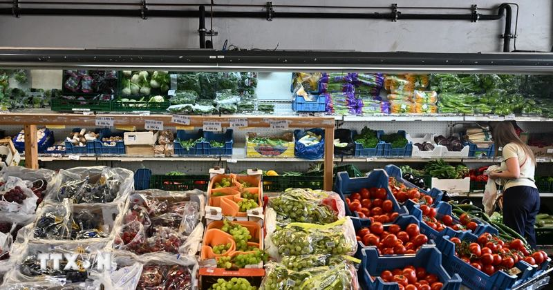
🔥
🔥
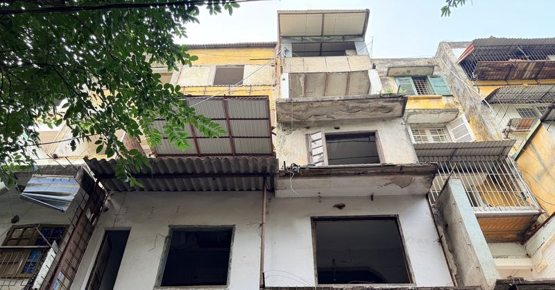
🔥
🔥
🔥
Người Việt đến nước Đông Nam Á nào nhiều nhất thế giới trong thời gian qua?
1. Người Việt đến nước Đông Nam Á nào nhiều nhất thế giới 9 tháng qua? Thái Lan 0% Singapore 0% Lào 0% Campuchia 0% Chính xác Theo báo cáo của Bộ Du lịch Campuchia, nước này đón 2,46 triệu lượt khách quốc tế trong 9 thán
🔥
🔥
🔥
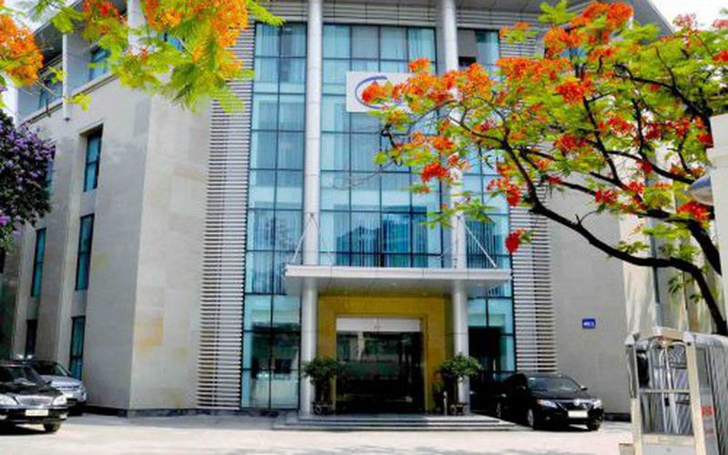
🔥
🔥
🔥
🔥
🔥
🔥
🔥
⚡
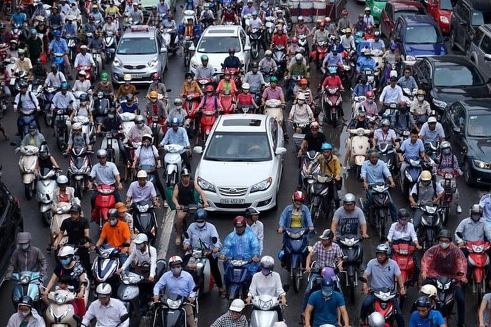
⚡
⚡
CSGT phạt tài xế chuyển làn trên cao tốc không bảo đảm khoảng cách an toàn
Tối 31.10, Đội CSGT đường bộ cao tốc số 6 (Phòng 6, Cục CSGT) cho biết đơn vị vừa lập biên bản phạt 1 tài xế vì chuyển làn trên cao tốc không bảo đảm khoảng cách an toàn . Theo đó, ngày 30.10, trong quá trình kiểm soát p
⚡
⚡
Hà Tĩnh quảng bá sản phẩm OCOP qua "Phiên chợ số": 2.500 đơn hàng được chốt
Facebook Twitter Lưu bài viết Bản in Copy link Ngày 31/10, tại Hà Tĩnh, Tỉnh đoàn Hà Tĩnh phối hợp với Sở Khoa học và Công nghệ, Hội Nông dân tỉnh tổ chức Chương trình “Phiên chợ số” livestream quảng bá và kết nối tiêu t
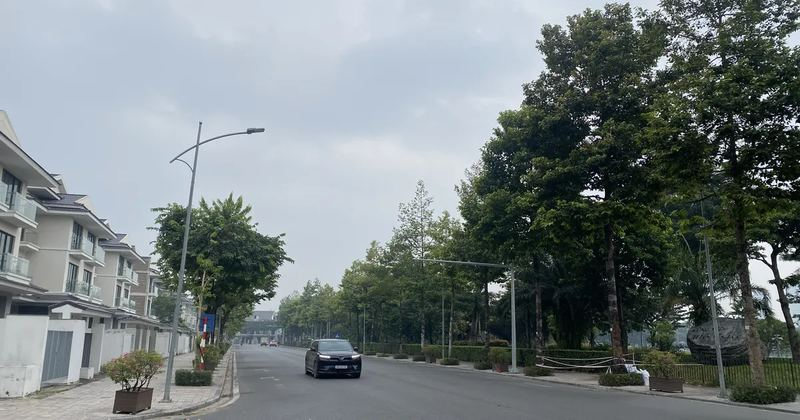
Chương trình truyền hình thực tế đa quốc gia tôn vinh văn hóa và di sản Huế
Theo thông tin tại "Hội nghị công bố kích cầu và sản phẩm du lịch mới" được tổ chức ở Huế ngày 31-10, The Huế Creators dự kiến triển khai mùa đầu tiên trong năm 2027. Chương trình được định hướng phát triển theo mô hình
Vụ án lừa đảo liên quan Phan Công Khanh: Đối tượng bị truy nã về nước đầu thú
Theo Công an TPHCM, ngày 28-10, Huỳnh Xuân Vấn từ Thái Lan về Việt Nam bằng đường hàng không và ra đầu thú tại Cảng hàng không quốc tế Tân Sơn Nhất. Cơ quan chức năng đã tiến hành các thủ tục phục vụ quá trình điều tra,
Tăng cường phối hợp, hỗ trợ công dân Việt Nam cư trú, học tập và lao động hợp pháp tại Hàn Quốc
Ngày 30/10, Đại sứ Việt Nam tại Hàn Quốc Vũ Hồ dự và phát biểu tại lễ khai trương trụ sở mới Cơ quan Quản lý xuất nhập cảnh và người nước ngoài Seoul, thuộc Bộ Tư pháp Hàn Quốc. Tham dự buổi lễ có ông Lee Jin-soo, Thứ tr
Người dân bị thu hồi đất cần điều kiện gì để được mua nhà ở xã hội không cần bốc thăm?
UBND thành phố Hà Nội vừa ban hành dự thảo quyết định Quy định chi tiết trình tự, tiêu chí để các chủ sở hữu nhà, người sử dụng đất bị thu hồi để thực hiện các dự án thuộc trường hợp Nhà nước thu hồi đất trên địa bàn thà
Shark Bình nói 2 cấp dưới 'vô tình phạm tội', xin cứu xét nữ nhân viên bị ung thư
Shark Bình tại phiên tòa xét xử vụ lừa đảo liên quan Mr Pips - Ảnh: GIANG LONG Chiều 31-10, TAND TP Hà Nội tiếp tục xét xử vụ án lừa đảo gần 1.600 tỉ đồng liên quan Phó Đức Nam (Mr Pips) cùng các đồng phạm. Trả
Vụ án Mr Pips: Làm rõ việc dừng cung cấp dịch vụ thanh toán cho sàn giao dịch
Facebook Twitter Lưu bài viết Bản in Copy link Ngày 31/10, phiên tòa xét xử Phó Đức Nam (tức Mr Pips) và các đồng phạm tiếp tục với phần thẩm vấn. Các luật sư tham gia xét hỏi các bị cáo, làm rõ các hành vi bị Viện Kiểm
Tổng giá trị tài sản công đã kiểm kê trên cả nước đạt hơn 12,87 triệu tỷ đồng
Theo kết quả Tổng kiểm kê tài sản công năm 2026 vừa được Bộ Tài chính công bố, tổng giá trị 20 loại tài sản công thuộc phạm vi kiểm kê đạt hơn 12,87 triệu tỷ đồng. Kết quả kiểm kê không chỉ phản ánh quy mô nguồn lực tài
Cận cảnh đại công trường cầu gần 16.000 tỷ đồng qua sông Hồng sau một năm
TIN MỚI Cầu Trần Hưng Đạo được khởi công ngày 9/10/2025, là một trong những công trình giao thông trọng điểm của Hà Nội nhân dịp kỷ niệm 71 năm Ngày Giải phóng Thủ đô. Dự án có tổng mức đầu tư khoảng 15.967 tỷ đồng, chiề
Hà Nội: Đường 70 tăng vốn cải tạo hơn 2.641 tỷ đồng, bắt đầu giải phóng mặt bằng
TIN MỚI Đường 70 tăng vốn cải tạo hơn 2.641 tỷ đồng, bắt đầu giải phóng mặt bằng. Dự án cải tạo, nâng cấp đường 70 đoạn Hà Đông - Văn Điển - nút giao Tứ Hiệp có điểm đầu nối với đường Nguyễn Khuyến, thuộc khu đô thị Văn
Không thông xe cao tốc kiểu ‘lấy ngày’, vài hôm sau lại đóng để thi công
Cần thêm 4,7 triệu m 3 vật liệu san lấp Ngày 31.10, ông Đỗ Thanh Bình, Ủy viên Trung ương Đảng, Bí thư Thành ủy Cần Thơ, và ông Lê Công Lý, Phó chủ tịch Thường trực UBND thành phố Cần Thơ đã chủ trì buổi làm việc với đại
Cao tốc Châu Đốc - Cần Thơ - Sóc Trăng qua Cần Thơ thiếu nguồn hơn 2,6 triệu m³ đá
Dự án cao tốc Châu Đốc - Cần Thơ - Sóc Trăng đi qua địa bàn TP Cần Thơ Ngày 31-10, UBND TP Cần Thơ làm việc với các nhà thầu thi công các dự án thành phần 2, 3 và 4 thuộc cao tốc Châu Đốc - Cần Thơ - Sóc Trăng. Theo Ban
Chính phủ tập trung các giải pháp thúc đẩy tăng trưởng, kiểm soát lạm phát
Facebook Twitter Lưu bài viết Bản in Copy link Tiếp tục chương trình Kỳ họp thứ 2, sáng 31/10, trong phiên thảo luận tại hội trường về tình hình thực hiện Kế hoạch phát triển kinh tế-xã hội năm 2026 và dự kiến kế hoạch p
Eximbank lãi 864 tỷ đồng sau 9 tháng, định hướng phát triển thận trọng và bền vững
Eximbank định hướng phát triển thận trọng và bền vững. Ảnh: Eximbank Trong 9 tháng đầu năm 2026, Eximbank ghi nhận tổng thu nhập hoạt động thuần đạt 4.692 tỷ đồng. Ngân hàng tiếp tục tăng cường kỷ luật tài chính, tối ưu
Không chỉ huy động vốn, phải chuyển hóa nguồn lực thành năng suất, giá trị gia tăng
Để thực hiện mục tiêu tăng trưởng từ 10% trở lên trong năm 2027, các đại biểu Quốc hội nhấn mạnh yêu cầu không chỉ huy động thêm vốn mà còn phải nâng cao hiệu quả sử dụng nguồn lực, chuyển hóa thành năng suất và giá trị
Tập đoàn Bảo Việt và Bảo Việt Nhân thọ khẳng định vị thế qua bảng xếp hạng STATE 100 năm 2026
TIN MỚI Bảo Việt - Doanh nghiệp đứng thứ 61 trong Top 100 doanh nghiệp nhà nước nộp ngân sách lớn nhất Việt Nam Ngày 15/9/2026 tại Hà Nội, Tập đoàn Bảo Việt được vinh danh Top 100 doanh nghiệp nhà nước nộp ngân sách lớn
Nước nào nắm mật mã công nghệ "thế giới chỉ 2 nước có" thì cảng biển của họ có thể bứt tốc, áp đảo đối thủ
TIN MỚI Vận tải biển thương mại từ lâu đã là "mạch máu" của thương mại toàn cầu, nhưng cái giá phải trả cho môi trường lại vô cùng đắt đỏ. Đây là minh chứng. Mỗi năm, ngành này xả ra khoảng 1 tỷ tấn CO2 - chiếm tới 3% tổ
Phó Chủ tịch UBND TPHCM Bùi Minh Thạnh: Đồng hành, hỗ trợ ngư dân chuyển đổi nghề, ổn định sinh kế
Trước yêu cầu chống khai thác hải sản bất hợp pháp, không báo cáo và không theo quy định (IUU), góp phần gỡ cảnh báo “thẻ vàng” của Ủy ban châu Âu, TPHCM đang triển khai các giải pháp cơ cấu lại nghề cá theo hướng bền vữ

Tỷ phú Phạm Nhật Vượng huy động 10.000 nhân sự, đưa máy đào hầm khổng lồ vào siêu dự án đường sắt 350 km/h
TIN MỚI Ngày 30/10, CTCP Đầu tư và Phát triển Đường sắt cao tốc VinSpeed cùng liên danh tổng thầu Vinhomes – SGC chính thức mở rộng phạm vi thi công, đồng loạt triển khai các hạng mục trọng điểm của tuyến đường sắt tốc đ
 ⚡
⚡
Người dân bị thu hồi đất cần điều kiện gì để được mua nhà ở xã hội không cần bốc thăm?
Người dân bị thu hồi đất cần điều kiện gì để được mua nhà ở xã hội không cần bốc thăm? Theo Trần Hoàng | 31/10/2026 20:56 PM | Kinh doanh Theo dõi Cafebiz.vn trên Người dân Hà Nội bị thu hồi nhà, đất để thực hiện các dự
⚡
⚡
⚡
⚡
⚡
⚡
⚡
⚡
Truy tìm 2 phạm nhân bỏ trốn khỏi Trại giam A2: Người dân tuyệt đối không tự ý tiếp cận, truy đuổi hoặc vây bắt đối tượng
Truy tìm 2 phạm nhân bỏ trốn khỏi Trại giam A2: Người dân tuyệt đối không tự ý tiếp cận, truy đuổi hoặc vây bắt đối tượng Theo Nam An | 31/10/2026 20:03 PM | Xã hội Theo dõi Cafebiz.vn trên Công an tỉnh An Giang thông bá
⚡
⚡
Truy tố 31 bị can trong vụ án tại Công ty Khoáng sản và Luyện kim Việt Trung
Facebook Twitter Lưu bài viết Bản in Copy link Viện Kiểm sát Nhân dân tối cao vừa ban hành cáo trạng truy tố 31 bị can trong vụ án xảy ra tại Công ty Trách nhiệm hữu hạn Khoáng sản và Luyện kim Việt Trung (Công ty VTM),
⚡
Chương trình “Tự hào là người Việt Nam 2026 - Nối vòng tay lớn” kết nối ký ức lịch sử và nhịp sống hôm nay
Đây là sự kiện hướng tới Ngày hội Đại đoàn kết toàn dân tộc, Ngày Văn hóa Việt Nam 24/11, kỷ niệm 80 năm Ngày Toàn quốc kháng chiến và 195 năm thành lập tỉnh Thái Nguyên gắn với Festival Trà quốc tế. Chương trình do Ban
⚡
⚡
Lãnh đạo Tối cao Iran đưa ra loạt chỉ thị chiến lược cho các chỉ huy quân đội cấp cao
Các tên lửa của Iran được trưng bày bên cạnh một biểu ngữ có hình Lãnh tụ Tối cao Iran Mojtaba Khamenei trên một con phố ở Tehran. (Ảnh: Reuters) Theo hãng thông tấn IRNA , Lãnh tụ Tối cao Khamenei đã chỉ đạo các chỉ huy
⚡
⚡
Xây dựng chương trình chuyên đề về kỹ năng ứng xử, phòng, chống bạo lực học đường
Nhấn mạnh điều này, ĐBQH Hoàng Văn Tuyên (TP. Hải Phòng) đề nghị Bộ Giáo dục và Đào tạo xây dựng chương trình chuyên đề về kỹ năng ứng xử; phòng, chống bạo lực học đường. Giáo dục không thể chỉ xử lý hậu quả Bày tỏ lo ng
⚡
⚡
Đà Nẵng: Lan tỏa thông điệp “Thượng tôn pháp luật vì một biển đảo bình yên và phát triển”
Facebook Twitter Lưu bài viết Bản in Copy link Hưởng ứng Ngày Pháp luật nước Cộng hòa xã hội chủ nghĩa Việt Nam (9/11), ngày 31/10, Bộ Tư lệnh Vùng Cảnh sát biển 2 phối hợp với Trường Đại học Quảng Nam, Tòa án nhân dân K
⚡
⚡
Sau 3 năm trốn truy nã, 'phó tướng' của trùm buôn xe sang Khanh Super từ Thái Lan về đầu thú
Ngày 31/10, Công an TPHCM cho biết Huỳnh Xuân Vấn (sinh năm 1987), người bị truy nã trong vụ án liên quan Phan Công Khanh, đã trở về Việt Nam đầu thú. Cụ thể, ngày 28/10, Vấn từ Thái Lan về nước bằng đường hàng không và
⚡
⚡
⚡
Quảng Ngãi "treo thưởng" 150 triệu đồng cho giải nhất sáng tác biểu trưng tỉnh
Với chủ đề “Quảng Ngãi - Bản sắc, hội tụ và phát triển”, cuộc thi được phát động trên toàn quốc, dành cho công dân Việt Nam trong nước và người Việt Nam ở nước ngoài. Mỗi tác giả hoặc nhóm tác giả được gửi tối đa 3 tác p
Đề xuất mở rộng Quốc lộ 1 đoạn Hà Nội-Bắc Giang lên thành cao tốc 8 làn xe
Facebook Twitter Lưu bài viết Bản in Copy link Ban Quản lý dự án 2 vừa gửi văn bản báo cáo Bộ Xây dựng kết quả hoàn thiện hồ sơ báo cáo nghiên cứu tiền khả thi Dự án mở rộng, nâng cấp tuyến Quốc lộ 1 đoạn Hà Nội-Bắc Gian
Đề xuất gần 3.200 tỷ đồng mở rộng đường Hồ Chí Minh đoạn Pác Bó-Cao Bằng
Facebook Twitter Lưu bài viết Bản in Copy link Ban Quản lý dự án đường Hồ Chí Minh (chủ đầu tư) vừa gửi Bộ Xây dựng tờ trình phê duyệt hồ sơ báo cáo nghiên cứu khả thi dự án nâng cấp, mở rộng đường Hồ Chí Minh đoạn Pác B
Tập trung nguồn lực, thiết bị đẩy nhanh tiến độ cao tốc Châu Đốc-Cần Thơ-Sóc Trăng
Dự án thành phần 2, 3, 4 có tổng chiều dài khoảng 132,47km với tổng mức đầu tư 31.288 tỷ đồng, bao gồm 11 gói thầu xây lắp. Đến nay, giá trị thực hiện đạt trên 12.210 tỷ đồng (khoảng 62%). Mặc dù tiến độ thi công các hạn
Giá vàng ngày 31/10: Vàng miếng SJC giảm mạnh, về mốc 139 triệu đồng/lượng
Trong phiên giao dịch hôm nay (31/10), giá vàng miếng và vàng nhẫn các thương hiệu trong nước đồng loạt giảm hơn 2 triệu đồng mỗi lượng. Trong khi đó, trên thị trường quốc tế, giá vàng lao dốc xuống mức thấp nhất kể từ c
Giá vàng hôm nay 31.10.2026: Lao dốc gần 3 triệu, rời xa ngưỡng 140 triệu đồng
Sáng 31.10, giá vàng miếng tại Công ty vàng bạc đá quý Sài Gòn - SJC được mua vào ở mức 136 triệu đồng/lượng và bán ra 139 triệu đồng, giảm 2,4 triệu đồng so với hôm qua. Thậm chí, Công ty Phú Quý mua vàng miếng xuống 13
Novaland lãi hơn 2.800 tỷ sau 9 tháng, dự án Aqua City chính thức mở bán trở lại vào hôm nay
Novaland lãi hơn 2.800 tỷ sau 9 tháng, dự án Aqua City chính thức mở bán trở lại vào hôm nay Theo Phan Nam | 31/10/2026 07:49 AM | Kinh doanh Theo dõi Cafebiz.vn trên Công ty Cổ phần Tập đoàn Đầu tư Địa ốc No Va (HoSE: N
Chỉ đạo, điều hành của Chính phủ, Thủ tướng Chính phủ nổi bật tuần 24-30/10/2026
Hướng dẫn chi tiết giảm 30% số thuế TNCN, thuế TNDN phải nộp từ kinh doanh có doanh thu không quá 10 tỉ đồng Thay mặt Chính phủ, Phó Thủ tướng Nguyễn Văn Thắng ký Nghị định số 398/2026/NĐ-CP quy định chi tiết Nghị quyết
PNJ lỗ gần 1.000 tỷ trong 2 quý, giảm hơn 1.000 nhân viên trong 9 tháng đầu năm
PNJ lỗ gần 1.000 tỷ trong 2 quý, giảm hơn 1.000 nhân viên trong 9 tháng đầu năm Theo Ngọc Điệp | 31/10/2026 06:59 AM | Kinh doanh Theo dõi Cafebiz.vn trên Lũy kế 9 tháng, doanh thu thuần đạt 32.704 tỷ đồng, tăng 29%. Lợi
Phó tổng giám đốc đứng sau 'ổ phim lậu', chi 24 tỉ mua siêu xe, bất động sản
Viện KSND tối cao vừa ban hành cáo trạng truy tố Nguyễn Đình Minh Khoa (38 tuổi, Phó tổng giám đốc Công ty TNHH Pixes Perfect) cùng đồng phạm, liên quan ổ nhóm chiếu phim lậu quy mô cực lớn. Khoa cùng Nguyễn Trung Anh (3
SEA Games 34 loại hàng loạt môn thế mạnh, Việt Nam mất “mỏ vàng” huy chương
(Dân trí) - Ban tổ chức SEA Games 34 ở Malaysia đã chốt 43 môn với 473 nội dung tranh huy chương, loại bỏ nhiều môn từng mang về huy chương vàng cho thể thao Việt Nam ở kỳ đại hội trước. Ngày 30/10, Liên đoàn Thể thao Đô
Diễn biến mới tại dự án cao tốc gần 19.000 tỷ rút ngắn từ TP.HCM đi Đà Lạt còn 3 giờ do liên danh T&T đầu tư tại tỉnh rộng nhất nước ta
TIN MỚI Ngày 29/10, lãnh đạo UBND tỉnh Lâm Đồng kiểm tra thực địa dự án cao tốc Bảo Lộc - Liên Khương và nhận thấy một số công trường chưa huy động đủ máy móc, thiết bị, nhân lực, chưa đáp ứng yêu cầu tiến độ. Trong khi

Ông lớn Thái Lan hé lộ nhà máy đặc biệt tại Việt Nam: 1 người dùng iPad quản lý 5 dây chuyền, hơn 100 robot hoạt động, doanh thu 9 tháng 4.240 tỷ đồng
TIN MỚI Ngày 29/10, tập đoàn SCG tổ chức chương trình ESG Company Tour 2026 tại nhà máy Nhựa Bình Minh ở Khu công nghiệp Vĩnh Lộc 2, tỉnh Tây Ninh (Long An cũ), giới thiệu các giải pháp tự động hóa đang được ứng dụng tro
Chung kết Tuổi Trẻ Startup Award 2026: Gửi gắm nhiều kỳ vọng vào sáng kiến đột phá
Nhà báo Trần Xuân Toàn, Tổng biên tập báo Tuổi Trẻ, Chủ tịch Hội đồng chuyên môn Tuổi Trẻ Startup Award 2026, chấm vòng chung kết mang tên "Chinh phục" của giải thưởng - Ảnh: DUYÊN PHAN Các ý tưởng khởi nghiệp phản ánh b
TPHCM huy động hơn 2.500 người, hàng trăm phương tiện diễn tập chữa cháy quy mô lớn
Sáng 31/10, Bộ Công an và UBND TPHCM phối hợp Công ty TNHH Hóa dầu Long Sơn (xã Long Sơn, TPHCM) tổ chức diễn tập phương án chữa cháy và cứu nạn, cứu hộ cấp Bộ tại Tổ hợp Hóa dầu Long Sơn. Hoạt động nhằm kiểm tra khả năn
California Fitness & Yoga lại gây tranh cãi: đề xuất thu thêm tiền để mở lại
Ban lãnh đạo California Fitness & Yoga gặp và trao đổi với hội viên ngày 21-10 - Ảnh: California Fitness & Yoga Thông báo khảo sát ý kiến hội viên về việc triển khai gói tập tạm thời ngày 31-10, chuỗi này dự kiến thu 599
ĐHQG Hà Nội lập 3 trường khi chưa đủ điều kiện, mở ngành trái thẩm quyền
Phó tổng thanh tra Nguyễn Văn Cường ký ban hành kết luận trách nhiệm của Đại học Quốc gia Hà Nội trong việc thực hiện cơ chế tự chủ giai đoạn 2021-2024 - Ảnh: TTCP Theo thông báo kết luận thanh tra trách nhiệm c
Con gái liệt sĩ Ngô Văn Cáng: Công viên tưởng niệm Lê Thị Riêng là quyết định nghĩa tình
Người dân đến thắp hương tưởng niệm các anh hùng liệt sĩ ở công viên Lê Thị Riêng chiều 30-10 - Ảnh: TRÍ ĐỨC Với những cựu chiến binh, thân nhân liệt sĩ, đây không chỉ là một công trình tưởng niệm mà còn là sự tri ân sâu
Hoàn thành chương trình thảo luận về KTXH, nhiều ý kiến tâm huyết, sát tình hình thực tiễn
Phó Chủ tịch Quốc hội Nguyễn Thị Hồng phát biểu kết thúc phiên thảo luận - Ảnh: chinhphu.vn/Nhật Bắc Phiên thảo luận về kinh tế-xã hội tại Quốc hội diễn ra vào chiều 30/10 và sáng 31/10 đã hoàn thành nội dung đề ra và kế
Công an TP.HCM yêu cầu người từng làm việc tại Công ty Bảo Phúc đến trình diện
Nguyễn Hoài Phong - Tổng giám đốc Công ty Bảo Phúc - bị bắt - Ảnh: Công an TP.HCM Như Tuổi Trẻ đã thông tin, Cơ quan Cảnh sát điều tra Công an TP.HCM đang điều tra vụ án "lừa đảo chiếm đoạt tài sản" xảy ra tại Công ty TN
Tổng Bí thư, Chủ tịch nước: Thái Nguyên phấn đấu thành tỉnh thu nhập cao trước năm 2045
Tối 30/10, tại Quảng trường Võ Nguyên Giáp, tỉnh Thái Nguyên tổ chức Chương trình kỷ niệm 195 năm Ngày thành lập tỉnh (4/11/1831 - 4/11/2026), đón nhận Huân chương Lao động hạng Nhất và khai mạc Festival Trà Quốc tế - Th
Chuyện phía sau những nhịp chèo đồng lòng của đội ghe ngo chùa Chén Kiểu
Đội ghe ngo chùa Chén Kiểu hăng say tập luyện - Ảnh: CA LINH Những ngày này, tại chùa Sro Lôn (chùa Chén Kiểu, ở phường Mỹ Xuyên, TP Cần Thơ), không khí tập luyện của đội ghe ngo diễn ra khẩn trương. Hơn 200 vận động viê
Lãnh đạo CHDC Congo đề nghị Tổng thống Putin giúp kết thúc đối đầu với Rwanda
Trong cuộc hội đàm với Tổng thống Putin bên lề hội nghị thượng đỉnh Nga - châu Phi diễn ra tại Moscow vừa qua, nhà lãnh đạo Tshisekedi khẳng định ông mong muốn nhận được sự giúp đỡ từ Nga trong nỗ lực tìm kiếm hòa bình v

Đại học Quốc gia Hà Nội: 3 trường thu học phí vượt quy định, 8 trường trích thiếu 94 tỉ quỹ học bổng
Phó tổng Thanh tra Nguyễn Văn Cường ký ban hành kết luận trách nhiệm của Đại học Quốc gia Hà Nội trong việc thực hiện cơ chế tự chủ giai đoạn 2021-2024 - Ảnh: TTCP Ngày 31-10, Thanh tra Chính phủ đã có thông bá
Cơn sốt đang hot nhất trên MXH: Chùa online không cho nói chuyện, 100.000 người trẻ Hàn Quốc vẫn chen nhau vào ngồi
Cơn sốt đang hot nhất trên MXH: Chùa online không cho nói chuyện, 100.000 người trẻ Hàn Quốc vẫn chen nhau vào ngồi Pa Dun | 31/10/2026 09:10 AM | Sống Theo dõi Cafebiz.vn trên Một trang web chùa ảo do một người làm ra,
Tăng cường lực lượng hải quan kiểm soát hàng nhập lậu, gian lận xuất xứ, bảo vệ hàng Việt
Theo Chương trình “Hàng Việt vì người Việt” giai đoạn 2026 - 2030 vừa được Thủ tướng Chính phủ phê duyệt, lực lượng hải quan, quản lý thị trường và các lực lượng chức năng sẽ tăng cường kiểm tra, xử lý nghiêm hành vi kin
Quân A.P và bạn gái làm đám cưới trên truyền hình, Trấn Thành và Anh Tú rơi nước mắt
Tập 14 Running Man Vietnam 2026 - Chạy ngay đi khiến mạng xã hội bùng nổ với đám cưới truyền hình của ca sĩ Quân A.P và Lê Khanh. Quân A.P và bạn gái công khai tình cảm Ở tập trước, Gia tộc R (dàn thành viên chính gồm: T
Đề xuất bổ sung chỉ tiêu hệ số giá nhà ở trên thu nhập của hộ gia đình đô thị
Đề xuất bổ sung chỉ tiêu hệ số giá nhà ở trên thu nhập của hộ gia đình đô thị Theo Luân Dũng | 31/10/2026 08:29 AM | Kinh tế vĩ mô Theo dõi Cafebiz.vn trên Sáng 31/10, Quốc hội tiếp tục thảo luận về tình hình thực hiện k
Tang lễ "người cha quốc dân" đột ngột qua đời ngày 29/10: Kim Hye Soo khóc sưng mắt, "bà nội quốc dân" cùng dàn sao xót xa tiễn đưa
TIN MỚI Showbiz Hàn bàng hoàng đón nhận tin huyền thoại điện ảnh Choi Bool Am đã qua đời ở tuổi 87. Được biết, "người cha quốc dân" trút hơi thở cuối cùng vào lúc 22h30 phút ngày 29/10 khi đang điều trị nội trú tại một b
Vì sao phơi nắng có thể khiến cơ thể cảm thấy dễ chịu hơn? Bác sĩ lý giải sự thật phía sau
TIN MỚI Thời gian gần đây, xu hướng phơi nắng để cải thiện sức khỏe được chia sẻ ngày càng nhiều trên mạng xã hội, đặc biệt trong các hội nhóm chuyên về tắm nắng, dưỡng sinh. Không ít người đăng tải trải nghiệm cá nhân,
Ông lớn Thái Lan hé lộ nhà máy đặc biệt tại Việt Nam: 1 người dùng iPad quản lý 5 dây chuyền, hơn 100 robot hoạt động, doanh thu 9 tháng 4.240 tỷ đồng
Ông lớn Thái Lan hé lộ nhà máy đặc biệt tại Việt Nam: 1 người dùng iPad quản lý 5 dây chuyền, hơn 100 robot hoạt động, doanh thu 9 tháng 4.240 tỷ đồng Theo Anh Khôi | 31/10/2026 08:18 AM | Kinh doanh Theo dõi Cafebiz.vn
Tổng Bí thư, Chủ tịch nước Tô Lâm: Thái Nguyên cần phấn đấu thành tỉnh thu nhập cao
Tối 30/10, tại Quảng trường Võ Nguyên Giáp, tỉnh Thái Nguyên tổ chức Lễ kỷ niệm 195 năm Ngày thành lập tỉnh (4/11/1831 – 4/11/2026) và khai mạc Festival Trà Quốc tế - Thái Nguyên năm 2026 với chủ đề “Tráng ca miền gió ng
Con gái Võ Hạ Trâm "giao diện Ấn Độ nhưng hệ điều hành miền Tây", thừa hưởng giọng hát cao vút của mẹ
TIN MỚI Võ Hạ Trâm kết hôn với doanh nhân người Ấn Độ Vikas Chaudhary vào năm 2019. Cặp đôi hiện có hai con, gồm con gái đầu lòng Moon (Chaudhary Vaishali Tây Phương, sinh năm 2021) và con trai Milo (Chaudhary An Quốc, s
Nga tung "siêu phẩm" chạy bằng hydro đầu tiên trong lịch sử, có thể rung chuyển ngành vận tải nước này
TIN MỚI Nhà sản xuất toa xe và thiết bị đường sắt lớn nhất Nga - Tập đoàn Transmashholding (TMH) - đã hoàn thành chế tạo 10 mẫu thử nghiệm đầu tiên của dòng động cơ điện kéo DTA-380A với công suất 380 kW, tương đương 517
[Video] Quy tập 141 hài cốt liệt sĩ trong đợt 2 tìm kiếm tại Công viên Lê Thị Riêng
Công tác tìm kiếm, quy tập tại Công viên Lê Thị Riêng được triển khai qua 2 đợt. Trong đợt 1, lực lượng chức năng đã tìm kiếm, quy tập 731 hài cốt liệt sĩ và tổ chức lễ truy điệu, an táng theo quy định. Bước sang đợt 2,
Bộ Dân tộc và Tôn giáo rà soát vị trí việc làm, xác định nhu cầu nhân lực
Thứ trưởng Nguyễn Hải Trung nhấn mạnh, việc xây dựng chức năng, nhiệm vụ và cơ cấu tổ chức phải xuất phát từ mục tiêu của từng đơn vị Chiều 30/10, Thứ trưởng Bộ Dân tộc và Tôn giáo Nguyễn Hải Trung chủ trì Hội nghị tập h
Đặt mục tiêu duy trì tỷ lệ hàng Việt tại các siêu thị trong nước đạt trên 80%
Facebook Twitter Lưu bài viết Bản in Copy link Phó Thủ tướng Thường trực Phạm Gia Túc ký Quyết định số 2069/QĐ-TTg phê duyệt Chương trình “Hàng Việt vì người Việt” giai đoạn 2026-2030 (Chương trình). Đặt mục tiêu thị trư
Người phụ nữ chuyển khoản nhầm 77 triệu đồng, người nhận không trả lại mà còn tuyên bố: "Tôi chưa từng nhận được tiền của chị"
TIN MỚI Tháng 7/2024, chị Ngô (tên nhân vật đã được thay đổi) ở Trung Quốc nhờ em rể chuyển khoản 20.000 NDT cho một người bạn để trả nợ. Những mãi đến tháng 12/2024, chị Ngô mới được bạn thông báo rằng chưa nhận được ti

Nguyễn Thanh Tâm kể về 2 chuyến đi sang Thổ Nhĩ Kỳ cùng Mr Pips để gặp ‘trùm cuối’
Mối tình 9 năm với Mr Pips Ngày 31/10, đại diện Viện Kiểm sát, luật sư tiếp tục xét hỏi 188 bị cáo phạm tội trong đường dây “lừa đảo chiếm đoạt tài sản”, do Phó Đức Nam (Mr Pips), cầm đầu. Trước đó, Viện Kiểm sát đã hỏi
Dung tích động cơ ô tô ngày càng nhỏ hơn nhưng công suất tăng gần 30% sau 20 năm
Theo phân tích của Vehicle Data Global (VDG), một công ty công nghệ chuyên cung cấp giải pháp và phân tích dữ liệu ô tô quy mô lớn hàng đầu thế giới, công suất động cơ ô tô đã tăng 28,9% trong hơn 20 năm qua, trong khi d
Quán cơm bị tố ‘chặt chém’ ở Quảng Ngãi: Lộ công trình xây dựng trái phép
Đáng chú ý, chủ khu đất này đã bị xử phạt hành chính từ tháng 5/2026, đồng thời bị buộc khôi phục hiện trạng ban đầu của đất trong thời hạn 30 ngày, nhưng đến nay việc khắc phục vi phạm vẫn chưa hoàn tất. Xây trái phép 1
Đại biểu Quốc hội trẻ em quan tâm giải pháp bảo vệ thiếu nhi trên không gian mạng
Chiều 30/10, Ban Thường vụ Tỉnh Đoàn Đắk Lắk, Hội đồng Đội tỉnh phối hợp với Đoàn đại biểu Quốc hội tỉnh tổ chức chương trình gặp mặt, tập huấn đại biểu trẻ em tỉnh tham gia phiên họp giả định “Quốc hội trẻ em” lần thứ I
Thời tiết ngày 31/10: Nam Bộ, Nam Trung Bộ có mưa dông, đề phòng lốc, sét
Facebook Twitter Lưu bài viết Bản in Copy link Theo Trung tâm Dự báo Khí tượng Thủy văn Quốc gia, ngày 31/10, Bắc Bộ ngày nắng, trong khi Nam Bộ và một số khu vực Nam Trung Bộ có mưa rào, dông rải rác. Trên biển, ngày và
“Nàng thơ” đi 50km, chi 1,6 triệu đồng thuê đồ chụp ảnh dưới tuyết ở TPHCM
Đi gần 60km để chụp ảnh dưới tuyết Để có bộ ảnh ưng ý, Yến Vy thuê hai chiếc váy có thiết kế cầu kỳ, mang phong cách công chúa. Chiếc váy đầu tiên có giá thuê khoảng 1,1 triệu đồng với nhiều chi tiết cầu kỳ, chiếc thứ ha
Bầu cử bất phân thắng bại, Israel phá vỡ thế bế tắc chính trị bằng cách nào?
Cả hai liên minh chính - một bên do đảng Likud cánh hữu của Thủ tướng Benjamin Netanyahu dẫn đầu và bên kia do đảng trung dung Yashar của cựu Tổng tư lệnh quân đội Gadi Eisenkot lãnh đạo - đều không đạt được 61 ghế cần t
Cơ quan Bảo hiểm xã hội phát thông báo quan trọng về tài khoản VssID của người dân
Cơ quan Bảo hiểm xã hội phát thông báo quan trọng về tài khoản VssID của người dân Theo Hà Giang | 31/10/2026 06:00 AM | Xã hội Theo dõi Cafebiz.vn trên Cơ quan Bảo hiểm xã hội khuyến cáo, để không gián đoạn việc tra cứu
Khơi thông nguồn lực, kiến tạo môi trường phát triển - Bài 4: An cư cho công nhân - Động lực thúc đẩy sự cống hiến
Kết luận số 106-KL/TW của Hội nghị lần thứ tư Ban Chấp hành Trung ương Đảng khóa XIV nhấn mạnh gắn tăng trưởng kinh tế với bảo đảm an sinh xã hội, nâng cao đời sống nhân dân, trong đó đẩy nhanh phát triển nhà ở xã hội, n
Mua đất giấy tay, xin cấp sổ đỏ bị xã xếp vào đất công: Người đàn ông kiện thắng
Đất có nhà ở, cây trồng lâu năm bỗng bị đưa vào đất công Theo trình bày của ông T. (ngụ TPHCM), năm 2006, ông nhận chuyển nhượng quyền sử dụng thửa đất có diện tích hơn 9.600m2 tại khu vực ngoại thành TPHCM từ bà C. bằng

Thành phố giàu nhất nước ta sắp có nút giao nhiều tầng hiện đại, xuất hiện tháp biểu tượng giữa 3 tuyến đường huyết mạch
TIN MỚI Phối cảnh dư án. Nút giao thuộc dự án đường liên cảng Cát Lái - Phú Hữu, tuyến đường dài gần 6km, rộng 60m, có tổng vốn đầu tư khoảng 8.782 tỷ đồng từ ngân sách TP.HCM. Sau cuộc thi tuyển, thành phố đã phê duyệt
Vinh danh các tài năng trẻ xuất sắc tại cuộc thi Samsung Solve for Tomorrow 2026
Facebook Twitter Lưu bài viết Bản in Copy link Chiều 31/10 tại Hà Nội, Samsung Việt Nam phối hợp cùng Trung tâm Đổi mới sáng tạo Quốc gia (NIC) tổ chức Vòng Chung kết và Lễ trao giải Cuộc thi Samsung Solve for Tomorrow (
Trang bị kỹ năng nhận diện lừa đảo, ứng xử văn minh trên không gian mạng cho sinh viên
Ngày 31-10, tại Khu du lịch Văn hóa Suối Tiên (TPHCM), Hiệp hội An ninh mạng quốc gia (NCA) chủ trì, phối hợp Google Việt Nam tổ chức Ngày hội Sinh viên An ninh mạng 2026, dưới sự bảo trợ của Bộ Công an và Bộ Giáo dục và
Đồng phạm của 'trùm siêu xe' Phan Công Khanh từ Thái Lan về đầu thú tại sân bay Tân Sơn Nhất
Công an TP.HCM tiếp nhận Huỳnh Xuân Vấn - Ảnh: Công an TP.HCM Ngày 31-10, Công an TP.HCM cho biết Huỳnh Xuân Vấn (39 tuổi) - người bị truy nã trong vụ án liên quan Phan Công Khanh (32 tuổi, thường gọi là Khanh Supper) -
Thái Nguyên: Lần đầu tiên phục dựng Lễ hội cơm mới của đồng bào Tày ở Hợp Thành
Facebook Twitter Lưu bài viết Bản in Copy link Chào mừng kỷ niệm 195 năm thành lập tỉnh Thái Nguyên và Festival trà quốc tế Thái Nguyên 2026, ngày 31/10, tại xã Hợp Thành, tỉnh Thái Nguyên đã diễn ra Lễ hội cơm mới 2026
Đối tượng truy nã đặc biệt trong vụ án trùm siêu xe Phan Công Khanh ra đầu thú
Ngày 31/10, Công an TPHCM thông tin về việc tiếp nhận Huỳnh Xuân Vấn (SN 1987), đối tượng bị truy nã về tội danh 'lừa đảo" trong vụ án liên quan đến Phan Công Khanh, ra đầu thú. Trước đó, ngày 28/10, Vấn từ Thái Lan trở
Ba Lan dậy sóng vì khủng hoảng tư pháp, Tổng thống Nawrocki quay đầu máy bay giữa chuyến công du
Tổng thống Ba Lan Karol Nawrocki. (Ảnh: AP) Cảnh sát cho biết đã bắt giữ ba người, sau khi một số người biểu tình vượt qua hàng rào của tòa án; một số người ném đồ vật vào lực lượng chức năng. Đang trên chuyến bay tới Se
Học sinh tiểu học trải nghiệm Đờn ca tài tử, đổi mới phương pháp học tiếng Anh
Học sinh Tiểu học Chu Văn An được trực tiếp giao lưu, trải nghiệm cùng các nghệ nhân, nghệ sĩ. Đưa nghệ thuật truyền thống đến gần hơn với học sinh Các cán bộ quản lý, giáo viên và học sinh Trường Tiểu học Chu Văn An vừa
Nông dân làng hoa Sa Đéc: Đa dạng hóa sản phẩm vụ hoa tết, đáp ứng thị hiếu tiêu dùng
Ông Đặng Quang Giàu cho biết, mùa hoa tết năm nay nông dân trồng thêm nhiều giống hoa mới. Thực hiện: QUANG VINH - HUỲNH DU Ghi nhận tại các nhà vườn, thời điểm này nông dân Sa Đéc đang tất bật chăm sóc các luống hoa. Nă
Giá gần 640 triệu đồng một đêm, khách sạn này sao lại thu hút sự chú ý đến vậy?
TIN MỚI Theo thông tin, 'ngôi sao' nhạc pop Justin Bieber đã lưu trú tại một căn phòng khách sạn siêu sang với chi phí 33 triệu won mỗi đêm (khoảng gần 640 triệu đồng/đêm) trong chuyến thăm Hàn Quốc gần đây. Theo các ngu
Trao học bổng, phương tiện đi lại, hỗ trợ sinh kế cho người dân khó khăn
Trao học bổng đến trẻ mồ côi do dịch Covid-19. Ảnh: HỒNG HẢI Tại chương trình, Hội Bảo trợ Người khuyết tật và trẻ mồ côi TPHCM đã trao 72 suất học bổng cho trẻ mồ côi do dịch Covid-19; trao 20 xe đạp cho học sinh mồ côi
Nhà lưu niệm Trần Huy Liệu - địa chỉ đỏ giáo dục truyền thống cho thế hệ trẻ
Facebook Twitter Lưu bài viết Bản in Copy link Ngày 31/10, Ủy ban Nhân dân xã Vụ Bản, tỉnh Ninh Bình phối hợp với Hội Khoa học Lịch sử Việt Nam và Viện Sử học Việt Nam tổ chức Hội thảo khoa học “Trần Huy Liệu - nhà cách
Lần đầu kiệt tác Anna Karenina có bản tiếng Việt dịch trực tiếp từ tiếng Nga
Bìa tiểu thuyết kinh điển Anna Karenina của đại văn hào Lev Tolstoy - Ảnh: NXB Điểm đặc biệt, theo lời nhà xuất bản, đây là lần đầu tiên, độc giả Việt Nam đọc Anna Karenina bản tiếng Việt dịch trực tiếp từ nguyên tác tiế
Đẩy nhanh tiến độ Quốc lộ 91, quyết tâm thông xe cơ bản trước Tết Nguyên đán 2027
Thực hiện chỉ đạo, cam kết của lãnh đạo thành phố, chủ đầu tư đang nỗ lực và quyết tâm đẩy nhanh tiến độ thi công, bảo đảm thông xe cơ bản trước Tết Nguyên đán 2027. Tuyến đường có tổng chiều dài khoảng 7,04km, đi qua đị
Quy hoạch TP.HCM tầm nhìn 100 năm: Phồn vinh, đáng sống và phát triển bền vững
Xác định cực tăng trưởng mới chỉ là bước đầu. Thành phố cần làm rõ chức năng, lợi thế cạnh tranh, quy mô đầu tư và mối liên hệ giữa từng cực - Ảnh: QUANG ĐỊNH Với diện tích khoảng 6.772km², gồm 168 đơn vị hành chính, thà
Dùng 61 tài khoản thao túng cổ phiếu Kido, 3 cá nhân bị phạt 4,5 tỷ đồng
Ủy ban Chứng khoán Nhà nước (UBCKNN) vừa xử phạt 3 cá nhân tổng cộng 4,5 tỷ đồng do có hành vi thao túng thị trường chứng khoán đối với cổ phiếu KDC của Công ty CP Tập đoàn Kido. Cụ thể, ông Thang Phú Minh (phường Bình T
Việt Nam kêu gọi tăng cường hợp tác, sử dụng công nghệ có trách nhiệm trên biển
Facebook Twitter Lưu bài viết Bản in Copy link Ngày 30/10 (giờ địa phương), tại trụ sở Liên hợp quốc ở New York, Hội đồng Bảo an Liên hợp quốc đã tiến hành phiên thảo luận mở cấp cao về “Công nghệ mới nổi và an ninh biển
Tiệc tối Range Rover: Ngắm xe độc bản, nghe chuyện chinh phục 7 đỉnh núi đến khuya
Một đêm tiệc được thiết kế như một chiếc Range Rover bespoke. Một bữa tiệc xe sang không giống thường lệ Cuộc gặp gỡ lần này của Range Rover diễn ra tại một tư gia ở TP.HCM, quy tụ khoảng 30 vị khách, từ lãnh đạo doanh n
CSGT yêu cầu 1397 chủ phương tiện trong danh sách dưới đây nộp phạt nguội theo Nghị định 168
TIN MỚI Trong tuần qua, Công an TP Bắc Ninh và tỉnh Hưng Yên đã thông báo danh sách phạt nguội. Cụ thể, từ ngày 19/10/2026 đến ngày 25/10/2026, Phòng Cảnh sát giao thông, Công an tỉnh Hưng Yên ghi nhận 580 lượt phương ti
Tôn Đông Á và hành trình gieo hạt mầm yêu thương cùng tuổi trẻ Bách khoa
Từ sáng sớm, bà con ấp Thiên Tuế, xã Lại Sơn, đặc khu Kiên Hải đã tề tựu về sân lăng. Đến dự lễ khánh thành có đại diện chính quyền địa phương, đại diện Trường đại học Bách khoa - Đại học Quốc gia TP.HCM cùng sinh viên t
Xe đầu kéo dừng quá vạch khi đèn đỏ, tài xế đối diện mức phạt 20 triệu đồng
Xe đầu kéo đã dừng đèn đỏ vẫn bị lập biên bản xử phạt 18-20 triệu đồng Ngày 30-10, Cục Cảnh sát giao thông cho biết Phòng Cảnh sát giao thông Công an tỉnh Bắc Ninh đã lập biên bản đối với một tài xế xe đầu kéo có hành vi
Bị CSGT Hà Nội phát hiện vi phạm nồng độ cồn, nhiều tài xế nói 'vẫn tỉnh táo'
Tối 30/10, Tổ công tác thuộc Đội CSGT đường bộ số 7 (Phòng CSGT Công an TP Hà Nội) tiến hành kiểm tra nồng độ cồn đối với các tài xế điều khiển phương tiện trên đường Lê Trọng Tấn (phường Hà Đông, Hà Nội). Lực lượng chức
VKSND tối cao kêu gọi cựu Chủ tịch Bamboo Capital ông Nguyễn Hồ Nam ra đầu thú
VKSND tối cao kêu gọi cựu Chủ tịch Bamboo Capital ông Nguyễn Hồ Nam ra đầu thú Nhật Lê | 31/10/2026 14:36 PM | Kinh doanh Theo dõi Cafebiz.vn trên VKSND tối cao kêu gọi cựu Chủ tịch Bamboo Capital Nguyễn Hồ Nam cùng 3 bị
T
Cận cảnh nút giao mới thay thế vị trí sạt lở trên cao tốc La Sơn - Hòa Liên
Theo ghi nhận, nút giao mới thay thế nút giao Khe Tre được dịch chuyển về vị trí Km 14+960 (cách nút giao cũ không xa). Vị trí này sẽ đấu nối cao tốc La Sơn - Hòa Liên với tuyến Tỉnh lộ 14B để dẫn ra xã miền núi Khe Tre,
Khởi động hành trình kỷ niệm 100 năm thành lập Trường THPT chuyên Lê Hồng Phong
Cô Phạm Thị Bé Hiền, nguyên hiệu trưởng Trường THPT chuyên Lê Hồng Phong, hiện nay là Trưởng Phòng Giáo dục phổ thông (Sở GD-ĐT TPHCM) chia sẻ tại lễ công bố chuỗi hoạt động kỷ niệm 100 năm thành lập trường Buổi họp mặt
Hướng dẫn cách lập di chúc miệng, viết tay, công chứng, chứng thực đúng pháp luật
Mẹ tôi năm nay đã 92 tuổi, bà vẫn còn minh mẫn nhưng đi lại khó khăn. Hiện bà có nguyện vọng lập di chúc tặng cho cháu nội 200 m 2 đất. Tôi muốn hỏi theo quy định pháp luật, trường hợp nào được lập di chúc miệng, hoặc tự
Công bố quyết định của Ban Bí thư về công tác cán bộ tại Viện Hàn lâm Khoa học xã hội Việt Nam
GS.TS. Lê Văn Lợi, Chủ tịch Viện Hàn lâm Khoa học xã hội Việt Nam, Phó Trưởng ban Chính sách, chiến lược Trung ương thừa ủy quyền của Ban Bí thư trao quyết định cho PGS.TS. Nguyễn Đức Minh và PGS.TS.
Sốt xuất huyết, tay chân miệng chưa có thuốc đặc trị: Người dân cần làm gì?
Sáng 31.10, Sở Y tế TP.HCM phối hợp cùng UBND phường Dĩ An tổ chức phát động chiến dịch phòng, chống sốt xuất huyết Dengue và tay chân miệng. Sau lễ phát động, đoàn công tác tiến hành khảo sát thực tế tại các "điểm nóng"
Phường Tân Hòa: Đi bộ đồng hành hưởng ứng tháng cao điểm “Vì người nghèo”
Chủ tịch Ủy ban MTTQ Việt Nam phường Tân Hòa Trần Hồng Vân cho biết, trong năm qua, công tác chăm lo người có hoàn cảnh khó khăn trên địa bàn nhận được sự hưởng ứng, đóng góp đầy nghĩa tình của các cơ quan, đơn vị, cá nh
Dàn MC cầu truyền hình Olympia: Người ‘mát tay’ năm nay áp lực, người từng mơ làm thí sinh
4 MC dẫn dắt tại các điểm cầu địa phương trong chung kết Đường lên đỉnh Olympia 2026 - Ảnh: VTV Trận chung kết Đường lên đỉnh Olympia 2026 diễn ra sáng 1-11 với màn tranh tài của 4 thí sinh, gồm Trần Võ Gia Bảo (Trường T
Masan lên tiếng về WiN ON: Chuỗi tiện lợi nội địa bán chả cá, cơm tấm, không mở rộng ồ ạt, thử nghiệm 8 cửa hàng
Masan lên tiếng về WiN ON: Chuỗi tiện lợi nội địa bán chả cá, cơm tấm, không mở rộng ồ ạt, thử nghiệm 8 cửa hàng Phương Vy | 31/10/2026 09:10 AM | Kinh doanh Theo dõi Cafebiz.vn trên Tính đến ngày 26/10, 8 cửa hàng tiện
Bộ GD-ĐT yêu cầu rà soát, chấn chỉnh thực hiện quy định về học phí đại học
Facebook Twitter Lưu bài viết Bản in Copy link Bộ Giáo dục và Đào tạo vừa có văn bản số 7526/BGDĐT-KHTC yêu cầu các cơ sở giáo dục đại học nghiêm túc rà soát việc xác định mức thu học phí năm học 2026-2027 đối với từng t
Quán cafe ở Hà Nội mạnh tay chi hàng trăm triệu đồng, 'biến hình' đón Halloween
Diễn ra vào ngày 31/10 hằng năm, Halloween là lễ hội bắt nguồn từ phương Tây, được một bộ phận người dân Việt Nam đón nhận như một dịp trải nghiệm văn hoá thú vị. Halloween gắn với những màn hóa trang, đèn bí ngô và trò
Nữ MC SN 1985 dẫn Đường Lên Đỉnh Olympia: Từng làm mẹ đơn thân 8 năm, nay tái hôn với doanh nhân, mở trường mầm non hơn 4.000m2 ở TP.HCM, Hải Phòng
TIN MỚI Nữ MC đa tài của Đường Lên Đỉnh Olympia Vân Hugo (tên thật Nguyễn Thanh Vân, sinh năm 1985) là gương mặt quen thuộc với khán giả truyền hình qua nhiều chương trình nổi tiếng. Biệt danh của cô bắt nguồn từ chương
Bắt Phan Văn Triệu SN 2001 và Nguyễn Thanh Tuấn Duy SN 1992 tại khách sạn
TIN MỚI Công an Hà Nội tối 30/10/2026 cho biết, Phòng Cảnh sát điều tra tội phạm về ma túy Công an thành phố vừa phối hợp với các đơn vị nghiệp vụ triệt phá thành công đường dây mua bán, vận chuyển trái phép chất ma túy
Ông chủ Cây xanh Công Minh bỏ trốn, tiền vẫn chuyển về tài khoản người nhà
Ông chủ Cây xanh Công Minh bỏ trốn, tiền vẫn chuyển về tài khoản người nhà Sau khi Nguyễn Công Minh bỏ trốn, tiền từ 61 dự án cây xanh vẫn tiếp tục chuyển về qua tài khoản người nhà theo cơ chế ông này đã thỏa thuận trướ
“Thành phố cuối tuần” Qtopia: Đủ gần để đi mỗi tuần, đủ vui để quay lại nhiều lần
TIN MỚI Đón lực cầu từ siêu đô thị TP.HCM , đủ gần để đi mỗi tuần Những chuyến về biển dịp nghỉ cuối tuần hoặc Lễ/Tết từ lâu đã trở thành thói quen của người dân TP.HCM và các tỉnh phía Nam . Với nhu cầu lặp lại thường x
[Video] Nhà nghỉ, khách sạn phải kiểm tra giấy tờ tùy thân của khách trước khi bố trí lưu trú
Theo đó, các cơ sở lưu trú, nhà nghỉ, khách sạn phải kiểm tra một trong các giấy tờ tùy thân của khách trước khi bố trí lưu trú. Các giấy tờ là: Thẻ căn cước, căn cước công dân, hộ chiếu, thẻ thường trú hoặc thẻ tạm trú
Thu 315 tỷ đồng từ quảng cáo trên kênh phim lậu rồi chia nhau mua nhà, xe sang
TIN MỚI Thu lợi bất chính 315 tỷ đồng Viện KSND Tối cao vừa ban hành cáo trạng truy tố bị can Nguyễn Đình Minh Khoa (SN 1988, Phó tổng giám đốc Công ty TNHH Pixes Perfect); Nguyễn Trung Anh (SN 1993, lập trình viên); Ngu
Cali thăm dò gói tập 599.000 đồng/tháng để mở lại câu lạc bộ, quyền lợi thẻ cũ sẽ ra sao?
Cali thăm dò gói tập 599.000 đồng/tháng để mở lại câu lạc bộ, quyền lợi thẻ cũ sẽ ra sao? Đồng An | 31/10/2026 07:48 AM | Xã hội Theo dõi Cafebiz.vn trên California Fitness & Yoga đang lấy ý kiến hội viên về gói tập tạm
'Đừng khinh thường một bông hoa chưa nở', BIGBANG gây sốt cùng loạt xu hướng rần rần cõi mạng
Cùng Tuổi Trẻ điểm tuần qua (26 đến 31-10), mạng xã hội có gì hút tương tác? - Ảnh: PEXELS Cùng Tuổi Trẻ điểm qua tuần vừa rồi (26 đến 31-10), mạng xã hội có gì vui, hút tương tác? "Đừng khinh thường một bông hoa chưa nở
Cựu hiệu trưởng trường nghệ thuật bị cáo buộc nhận hối lộ khi tuyển giáo viên.
Theo hãng thông tấn Yonhap , thẩm phán Kim Jin-man thuộc Tòa án Trung tâm Seoul đã phê chuẩn lệnh bắt ông Wang sau phiên thẩm vấn. Tòa cho rằng có nguy cơ nghi phạm tiêu hủy chứng cứ hoặc bỏ trốn. Trong thời gian giữ chứ
Thu 315 tỷ đồng từ quảng cáo trên kênh phim lậu rồi chia nhau mua nhà, xe sang
Thu lợi bất chính 315 tỷ đồng Viện KSND Tối cao vừa ban hành cáo trạng truy tố bị can Nguyễn Đình Minh Khoa (SN 1988, Phó tổng giám đốc Công ty TNHH Pixes Perfect); Nguyễn Trung Anh (SN 1993, lập trình viên); Nguyễn Hoàn
Từ thiên thần đến ác quỷ: Giới trẻ Hà Nội biến hóa trong dịp lễ Halloween
Dù lễ hội Halloween chưa chính thức diễn ra, tối 30/10, nhiều người dân, đặc biệt là giới trẻ Hà Nội, đã đổ xuống phố với những bộ hóa trang ma quái, kinh dị, tạo nên không khí sôi động cho mùa lễ hội. Ghi nhận của phóng
Tân Đại sứ Pháp: 3 ưu tiên của nhà ngoại giao mang một phần dòng máu Việt
(Dân trí) - Tân Đại sứ Pháp Didier Le Bret, người mang trong mình một phần dòng máu Việt, đã đặt ra những mục tiêu cụ thể cho nhiệm kỳ công tác tại Việt Nam. Đại sứ Pháp tại Việt Nam Didier Le Bret phát biểu tại cuộc gặp
Sáu nhiệm vụ, giải pháp mở rộng tối đa cơ hội người khuyết tật phát huy năng lực
Facebook Twitter Lưu bài viết Bản in Copy link Theo báo cáo của Bộ Y tế, Việt Nam hiện có hơn 8 triệu người khuyết tật. Việt Nam cũng là một trong những nước có tỷ lệ người khuyết tật khá cao so với tổng dân số trong khu
Lăng mộ "chen chúc" bên biệt thự, khu dân cư ở các nghĩa địa sắp đóng cửa
Theo thống kê của UBND phường Thuận An (thành phố Huế), địa phương này hiện có 19 khu nghĩa địa, nghĩa trang, với hơn 23.430 lăng mộ, chiếm trên 151ha đất. Diện tích này chiếm hơn 50% diện tích đất ở toàn phường. Hầu hết
Phát động phong trào "Toàn dân xây dựng nền quốc phòng vững mạnh, hiện đại"
Facebook Twitter Lưu bài viết Bản in Copy link Phó Thủ tướng Phan Văn Giang vừa ký Chỉ thị số 38/CT-TTg ngày 30/10/2026 của Thủ tướng Chính phủ về tổ chức phong trào "Toàn dân xây dựng nền quốc phòng vững mạnh, hiện đại.
Nhận định Sông Lam Nghệ An vs Công an Hà Nội, 18h00 ngày 31/10: Đại chiến trên đỉnh
Nhận định trước trận đấu Sông Lam Nghệ An vs Công an Hà Nội Cục diện nhóm đầu bảng đang diễn ra đầy kịch tính. Sông Lam Nghệ An đang là cái tên mang đến sự ngỡ ngàng lớn nhất cho giới mộ điệu khi chễm chệ trên đỉnh bảng
Từ 3 cử nhân Ngữ văn trên chuyến tàu Nam tiến đến 3 hiệu trưởng, phó hiệu trưởng
Chuyến tàu năm 1977 Năm 1977, khi đất nước thống nhất chưa lâu, giáo dục phía Nam đứng trước nhu cầu cấp thiết về đội ngũ giáo viên được đào tạo bài bản. Ba sinh viên Khoa Ngữ văn, Trường ĐH Sư phạm Hà Nội I là Bùi Mạnh
[Video] Dự báo thời tiết ngày 31/10/2026: Bắc Bộ và Trung Bộ đón nắng trở lại, Nam Bộ chiều tối có mưa dông
Tại Bắc Bộ, không khí lạnh yếu lệch Đông và vùng hội tụ gió trên cao suy yếu nhanh. Sau một đêm có mưa rào và dông vài nơi, riêng Quảng Ninh và Hải Phòng có mưa dông rải rác, cục bộ mưa to, hôm nay toàn khu vực giảm mưa,
Cuộc sống của á hậu đưa 5 con rời TPHCM ra Đà Nẵng ở nhà 450m2 giờ ra sao?
Đi chợ hết 5 triệu, cuộc sống 'thần tiên' Kể từ khi đưa 5 con rời TPHCM đến Đà Nẵng, cuộc sống á hậu Diễm Châu thay đổi gần như hoàn toàn. Trong video mới nhất, Diễm Châu dậy sớm đi chợ, mua lượng lớn tôm, bề bề, cua lôn
Giám đốc Bệnh viện Hữu nghị Việt Đức: ‘Không phải cứ đăng ký là hiến tạng được’
Thông tin lan truyền trên mạng xã hội ngày 30/10 cho rằng chỉ cần số căn cước công dân và họ tên là có thể đăng ký hiến mô, tạng thành công, khiến nhiều người băn khoăn về quy trình đăng ký hiến tạng. Theo PGS.TS Dương Đ


Học sinh trường Ams hát nhảy, cổ vũ Đoàn Lê Anh Đức chinh phục đỉnh Olympia
Ngày 30/10, các học sinh trường THPT chuyên Hà Nội - Amsterdam tham gia cổ vũ, tiếp sức Đoàn Lê Anh Đức trong trận Chung kết Đường lên đỉnh Olympia 26 . Chương trình diễn ra trong không khí sôi động với sự chuẩn bị kỹ l